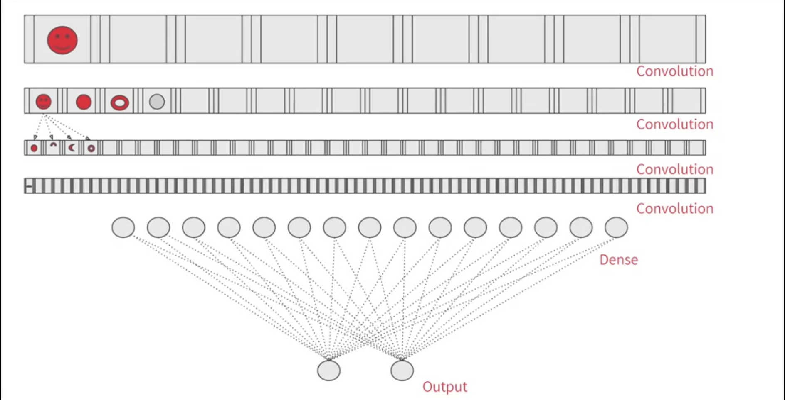
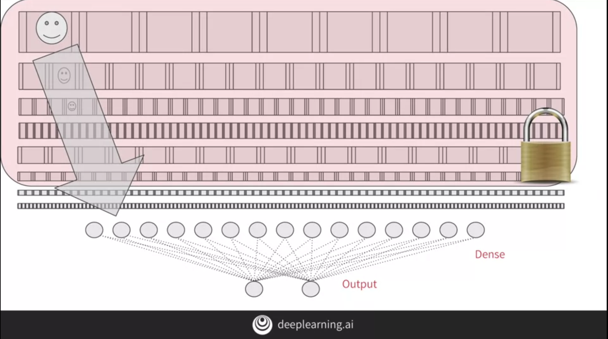
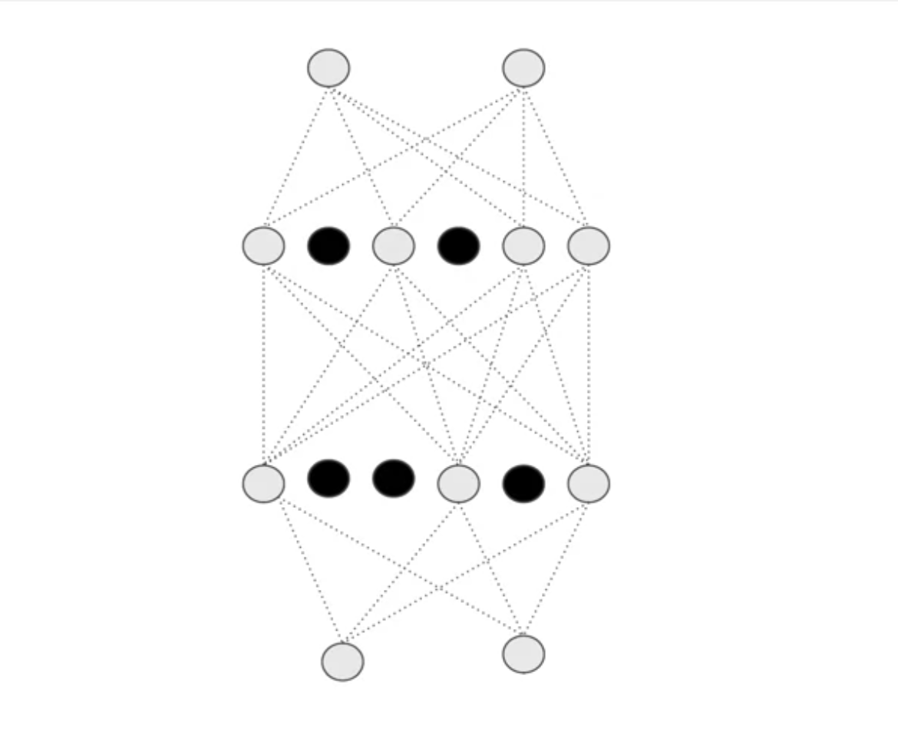
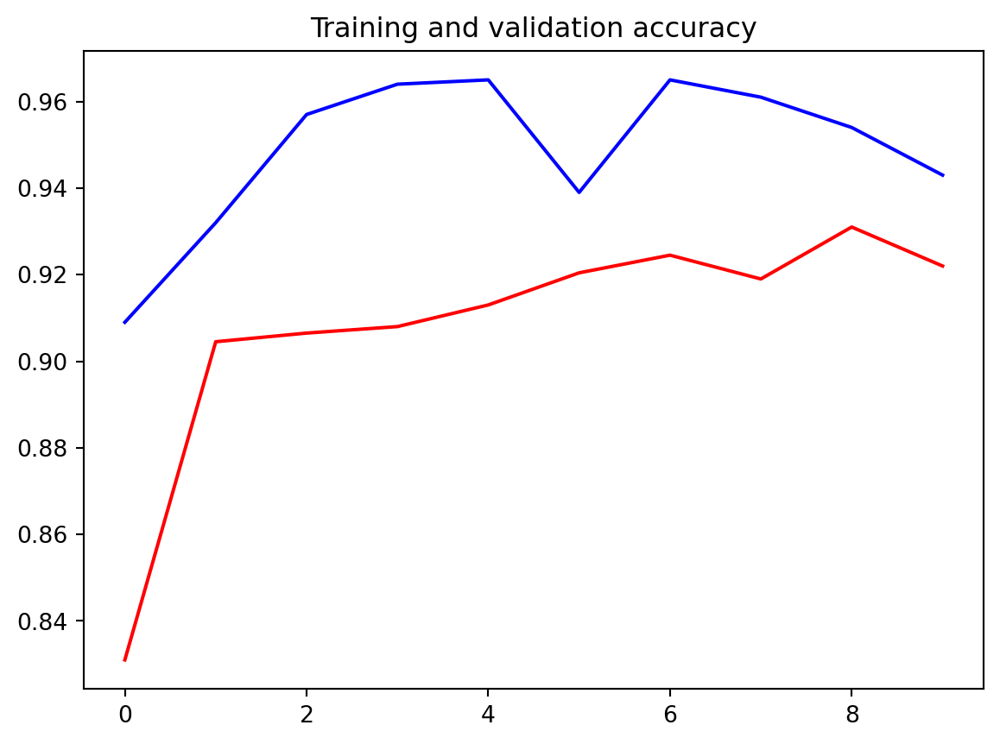
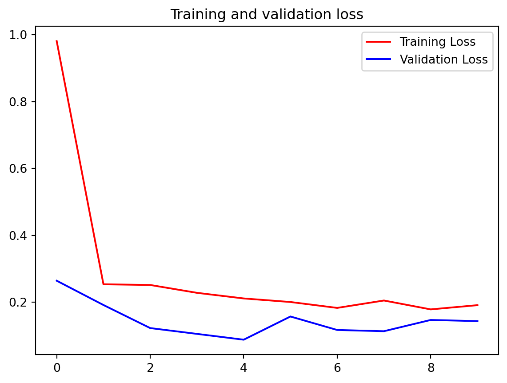

Code
import os
import zipfile
import random
import shutil
import tensorflow as tf
from tensorflow.keras.optimizers import RMSprop
from tensorflow.keras.preprocessing.image import ImageDataGenerator
from shutil import copyfile
from os import getcwd

source_path = '/tmp/PetImages'
source_path_dogs = os.path.join(source_path, 'Dog')
source_path_cats = os.path.join(source_path, 'Cat')
# os.listdir returns a list containing all files under the given path
print(f"There are {len(os.listdir(source_path_dogs))} images of dogs.")
print(f"There are {len(os.listdir(source_path_cats))} images of cats.")if not os.path.exists('./tmp/cats-v-dogs'):
os.mkdir('./tmp/cats-v-dogs')
if not os.path.exists('./tmp/cats-v-dogs/training'):
os.mkdir('./tmp/cats-v-dogs/training')
if not os.path.exists('./tmp/cats-v-dogs/testing'):
os.mkdir('./tmp/cats-v-dogs/testing')
if not os.path.exists('./tmp/cats-v-dogs/training/cats'):
os.mkdir('./tmp/cats-v-dogs/training/cats')
if not os.path.exists('./tmp/cats-v-dogs/training/dogs'):
os.mkdir('./tmp/cats-v-dogs/training/dogs')
if not os.path.exists('./tmp/cats-v-dogs/testing/cats'):
os.mkdir('./tmp/cats-v-dogs/testing/cats')
if not os.path.exists('./tmp/cats-v-dogs/testing/dogs'):
os.mkdir('./tmp/cats-v-dogs/testing/dogs')def split_data(SOURCE, TRAINING, TESTING, SPLIT_SIZE):
# YOUR CODE STARTS HERE
all_files = []
for file_name in os.listdir(SOURCE):
file_path = SOURCE + file_name
if os.path.getsize(file_path):
all_files.append(file_name)
else:
print('{} is zero length, so ignoring'.format(file_name))
n_files = len(all_files)
split_point = int(n_files * SPLIT_SIZE)
shuffled = random.sample(all_files, n_files)
train_set = shuffled[:split_point]
test_set = shuffled[split_point:]
for file_name in train_set:
copyfile(SOURCE + file_name, TRAINING + file_name)
for file_name in test_set:
copyfile(SOURCE + file_name, TESTING + file_name)split_size = .9
CAT_SOURCE_DIR = "./tmp/PetImages/Cat/"
TRAINING_CATS_DIR = "./tmp/cats-v-dogs/training/cats/"
TESTING_CATS_DIR = "./tmp/cats-v-dogs/testing/cats/"
DOG_SOURCE_DIR = "./tmp/PetImages/Dog/"
TRAINING_DOGS_DIR = "./tmp/cats-v-dogs/training/dogs/"
TESTING_DOGS_DIR = "./tmp/cats-v-dogs/testing/dogs/"ImageDataGenerator: All images will be resized to 150x150 and do augmentation to aviod over fiting
# Flow training images in batches of 20 using train_datagen generator
train_generator = train_datagen.flow_from_directory(
train_dir, # This is the source directory for training images
target_size=(150, 150), # All images will be resized to 150x150
batch_size=20,
# Since we use binary_crossentropy loss, we need binary labels
class_mode='binary')
# Flow validation images in batches of 20 using test_datagen generator
validation_generator = test_datagen.flow_from_directory(
validation_dir,
target_size=(150, 150),
batch_size=20,
class_mode='binary')Found 24998 images belonging to 2 classes.
Found 13013 images belonging to 2 classes.There are 21,802,784 total parameters in this model.
There are 0 trainable parameters in this model.
add Dropout to improve over fitting issue.
from tensorflow.keras import layers
x = layers.Flatten()(last_output)
# Add a fully connected layer with 1024 hidden units and ReLU activation
x = layers.Dense(1024, activation='relu')(x)
# Add a dropout rate of 0.2
x = layers.Dropout(0.2)(x)
# Add a final sigmoid layer for classification
x = layers.Dense(1, activation='sigmoid')(x) final model
Epoch 1/10
1/100 ━━━━━━━━━━━━━━━━━━━━ 4:08 3s/step - accuracy: 0.5500 - loss: 0.7655 2/100 ━━━━━━━━━━━━━━━━━━━━ 26s 266ms/step - accuracy: 0.5625 - loss: 4.0972 3/100 ━━━━━━━━━━━━━━━━━━━━ 25s 267ms/step - accuracy: 0.5250 - loss: 8.6589 4/100 ━━━━━━━━━━━━━━━━━━━━ 24s 255ms/step - accuracy: 0.5188 - loss: 9.9921 5/100 ━━━━━━━━━━━━━━━━━━━━ 23s 251ms/step - accuracy: 0.5190 - loss: 10.3648 6/100 ━━━━━━━━━━━━━━━━━━━━ 23s 248ms/step - accuracy: 0.5283 - loss: 10.2944 7/100 ━━━━━━━━━━━━━━━━━━━━ 22s 246ms/step - accuracy: 0.5406 - loss: 10.0521 8/100 ━━━━━━━━━━━━━━━━━━━━ 22s 244ms/step - accuracy: 0.5519 - loss: 9.7533 9/100 ━━━━━━━━━━━━━━━━━━━━ 22s 243ms/step - accuracy: 0.5616 - loss: 9.4453 10/100 ━━━━━━━━━━━━━━━━━━━━ 21s 242ms/step - accuracy: 0.5709 - loss: 9.1355 11/100 ━━━━━━━━━━━━━━━━━━━━ 21s 241ms/step - accuracy: 0.5798 - loss: 8.8336 12/100 ━━━━━━━━━━━━━━━━━━━━ 21s 240ms/step - accuracy: 0.5884 - loss: 8.5434 13/100 ━━━━━━━━━━━━━━━━━━━━ 20s 240ms/step - accuracy: 0.5967 - loss: 8.2692 14/100 ━━━━━━━━━━━━━━━━━━━━ 20s 239ms/step - accuracy: 0.6046 - loss: 8.0107 15/100 ━━━━━━━━━━━━━━━━━━━━ 20s 239ms/step - accuracy: 0.6118 - loss: 7.7701 16/100 ━━━━━━━━━━━━━━━━━━━━ 20s 238ms/step - accuracy: 0.6189 - loss: 7.5440 17/100 ━━━━━━━━━━━━━━━━━━━━ 19s 238ms/step - accuracy: 0.6254 - loss: 7.3317 18/100 ━━━━━━━━━━━━━━━━━━━━ 19s 238ms/step - accuracy: 0.6316 - loss: 7.1320 19/100 ━━━━━━━━━━━━━━━━━━━━ 19s 237ms/step - accuracy: 0.6371 - loss: 6.9447 20/100 ━━━━━━━━━━━━━━━━━━━━ 18s 237ms/step - accuracy: 0.6424 - loss: 6.7687 21/100 ━━━━━━━━━━━━━━━━━━━━ 18s 237ms/step - accuracy: 0.6476 - loss: 6.6019 22/100 ━━━━━━━━━━━━━━━━━━━━ 18s 237ms/step - accuracy: 0.6526 - loss: 6.4441 23/100 ━━━━━━━━━━━━━━━━━━━━ 18s 237ms/step - accuracy: 0.6573 - loss: 6.2946 24/100 ━━━━━━━━━━━━━━━━━━━━ 17s 237ms/step - accuracy: 0.6617 - loss: 6.1537 25/100 ━━━━━━━━━━━━━━━━━━━━ 17s 236ms/step - accuracy: 0.6655 - loss: 6.0214 26/100 ━━━━━━━━━━━━━━━━━━━━ 17s 236ms/step - accuracy: 0.6690 - loss: 5.8967 27/100 ━━━━━━━━━━━━━━━━━━━━ 17s 236ms/step - accuracy: 0.6723 - loss: 5.7778 28/100 ━━━━━━━━━━━━━━━━━━━━ 17s 237ms/step - accuracy: 0.6756 - loss: 5.6642 29/100 ━━━━━━━━━━━━━━━━━━━━ 16s 237ms/step - accuracy: 0.6786 - loss: 5.5559 30/100 ━━━━━━━━━━━━━━━━━━━━ 16s 237ms/step - accuracy: 0.6815 - loss: 5.4523 31/100 ━━━━━━━━━━━━━━━━━━━━ 16s 237ms/step - accuracy: 0.6843 - loss: 5.3534 32/100 ━━━━━━━━━━━━━━━━━━━━ 16s 236ms/step - accuracy: 0.6869 - loss: 5.2587 33/100 ━━━━━━━━━━━━━━━━━━━━ 15s 237ms/step - accuracy: 0.6895 - loss: 5.1678 34/100 ━━━━━━━━━━━━━━━━━━━━ 15s 237ms/step - accuracy: 0.6918 - loss: 5.0808 35/100 ━━━━━━━━━━━━━━━━━━━━ 15s 237ms/step - accuracy: 0.6937 - loss: 4.9979 36/100 ━━━━━━━━━━━━━━━━━━━━ 15s 237ms/step - accuracy: 0.6956 - loss: 4.9188 37/100 ━━━━━━━━━━━━━━━━━━━━ 14s 237ms/step - accuracy: 0.6973 - loss: 4.8428 38/100 ━━━━━━━━━━━━━━━━━━━━ 14s 237ms/step - accuracy: 0.6989 - loss: 4.7696 39/100 ━━━━━━━━━━━━━━━━━━━━ 14s 237ms/step - accuracy: 0.7005 - loss: 4.6992 40/100 ━━━━━━━━━━━━━━━━━━━━ 14s 237ms/step - accuracy: 0.7020 - loss: 4.6314 41/100 ━━━━━━━━━━━━━━━━━━━━ 13s 237ms/step - accuracy: 0.7036 - loss: 4.5659 42/100 ━━━━━━━━━━━━━━━━━━━━ 13s 237ms/step - accuracy: 0.7051 - loss: 4.5025 43/100 ━━━━━━━━━━━━━━━━━━━━ 13s 236ms/step - accuracy: 0.7068 - loss: 4.4411 44/100 ━━━━━━━━━━━━━━━━━━━━ 13s 236ms/step - accuracy: 0.7084 - loss: 4.3816 45/100 ━━━━━━━━━━━━━━━━━━━━ 12s 236ms/step - accuracy: 0.7100 - loss: 4.3239 46/100 ━━━━━━━━━━━━━━━━━━━━ 12s 236ms/step - accuracy: 0.7117 - loss: 4.2681 47/100 ━━━━━━━━━━━━━━━━━━━━ 12s 236ms/step - accuracy: 0.7133 - loss: 4.2139 48/100 ━━━━━━━━━━━━━━━━━━━━ 12s 236ms/step - accuracy: 0.7149 - loss: 4.1612 49/100 ━━━━━━━━━━━━━━━━━━━━ 12s 236ms/step - accuracy: 0.7165 - loss: 4.1101 50/100 ━━━━━━━━━━━━━━━━━━━━ 11s 236ms/step - accuracy: 0.7180 - loss: 4.0606 51/100 ━━━━━━━━━━━━━━━━━━━━ 11s 236ms/step - accuracy: 0.7194 - loss: 4.0128 52/100 ━━━━━━━━━━━━━━━━━━━━ 11s 236ms/step - accuracy: 0.7208 - loss: 3.9663 53/100 ━━━━━━━━━━━━━━━━━━━━ 11s 236ms/step - accuracy: 0.7221 - loss: 3.9211 54/100 ━━━━━━━━━━━━━━━━━━━━ 10s 236ms/step - accuracy: 0.7234 - loss: 3.8773 55/100 ━━━━━━━━━━━━━━━━━━━━ 10s 236ms/step - accuracy: 0.7247 - loss: 3.8346 56/100 ━━━━━━━━━━━━━━━━━━━━ 10s 236ms/step - accuracy: 0.7259 - loss: 3.7931 57/100 ━━━━━━━━━━━━━━━━━━━━ 10s 236ms/step - accuracy: 0.7271 - loss: 3.7526 58/100 ━━━━━━━━━━━━━━━━━━━━ 9s 236ms/step - accuracy: 0.7283 - loss: 3.7133 59/100 ━━━━━━━━━━━━━━━━━━━━ 9s 236ms/step - accuracy: 0.7294 - loss: 3.6750 60/100 ━━━━━━━━━━━━━━━━━━━━ 9s 236ms/step - accuracy: 0.7306 - loss: 3.6377 61/100 ━━━━━━━━━━━━━━━━━━━━ 9s 236ms/step - accuracy: 0.7317 - loss: 3.6013 62/100 ━━━━━━━━━━━━━━━━━━━━ 8s 236ms/step - accuracy: 0.7328 - loss: 3.5658 63/100 ━━━━━━━━━━━━━━━━━━━━ 8s 236ms/step - accuracy: 0.7339 - loss: 3.5311 64/100 ━━━━━━━━━━━━━━━━━━━━ 8s 236ms/step - accuracy: 0.7349 - loss: 3.4973 65/100 ━━━━━━━━━━━━━━━━━━━━ 8s 236ms/step - accuracy: 0.7360 - loss: 3.4643 66/100 ━━━━━━━━━━━━━━━━━━━━ 8s 236ms/step - accuracy: 0.7371 - loss: 3.4321 67/100 ━━━━━━━━━━━━━━━━━━━━ 7s 236ms/step - accuracy: 0.7381 - loss: 3.4006 68/100 ━━━━━━━━━━━━━━━━━━━━ 7s 235ms/step - accuracy: 0.7392 - loss: 3.3698 69/100 ━━━━━━━━━━━━━━━━━━━━ 7s 235ms/step - accuracy: 0.7402 - loss: 3.3397 70/100 ━━━━━━━━━━━━━━━━━━━━ 7s 235ms/step - accuracy: 0.7411 - loss: 3.3102 71/100 ━━━━━━━━━━━━━━━━━━━━ 6s 235ms/step - accuracy: 0.7421 - loss: 3.2814 72/100 ━━━━━━━━━━━━━━━━━━━━ 6s 235ms/step - accuracy: 0.7431 - loss: 3.2532 73/100 ━━━━━━━━━━━━━━━━━━━━ 6s 235ms/step - accuracy: 0.7440 - loss: 3.2255 74/100 ━━━━━━━━━━━━━━━━━━━━ 6s 235ms/step - accuracy: 0.7450 - loss: 3.1984 75/100 ━━━━━━━━━━━━━━━━━━━━ 5s 235ms/step - accuracy: 0.7460 - loss: 3.1718 76/100 ━━━━━━━━━━━━━━━━━━━━ 5s 235ms/step - accuracy: 0.7469 - loss: 3.1458 77/100 ━━━━━━━━━━━━━━━━━━━━ 5s 235ms/step - accuracy: 0.7478 - loss: 3.1204 78/100 ━━━━━━━━━━━━━━━━━━━━ 5s 235ms/step - accuracy: 0.7486 - loss: 3.0955 79/100 ━━━━━━━━━━━━━━━━━━━━ 4s 235ms/step - accuracy: 0.7495 - loss: 3.0711 80/100 ━━━━━━━━━━━━━━━━━━━━ 4s 235ms/step - accuracy: 0.7503 - loss: 3.0472 81/100 ━━━━━━━━━━━━━━━━━━━━ 4s 235ms/step - accuracy: 0.7512 - loss: 3.0237 82/100 ━━━━━━━━━━━━━━━━━━━━ 4s 235ms/step - accuracy: 0.7520 - loss: 3.0007 83/100 ━━━━━━━━━━━━━━━━━━━━ 3s 235ms/step - accuracy: 0.7527 - loss: 2.9782 84/100 ━━━━━━━━━━━━━━━━━━━━ 3s 235ms/step - accuracy: 0.7535 - loss: 2.9560 85/100 ━━━━━━━━━━━━━━━━━━━━ 3s 235ms/step - accuracy: 0.7543 - loss: 2.9343 86/100 ━━━━━━━━━━━━━━━━━━━━ 3s 235ms/step - accuracy: 0.7551 - loss: 2.9130 87/100 ━━━━━━━━━━━━━━━━━━━━ 3s 235ms/step - accuracy: 0.7558 - loss: 2.8920 88/100 ━━━━━━━━━━━━━━━━━━━━ 2s 235ms/step - accuracy: 0.7566 - loss: 2.8713 89/100 ━━━━━━━━━━━━━━━━━━━━ 2s 235ms/step - accuracy: 0.7573 - loss: 2.8510 90/100 ━━━━━━━━━━━━━━━━━━━━ 2s 235ms/step - accuracy: 0.7581 - loss: 2.8311 91/100 ━━━━━━━━━━━━━━━━━━━━ 2s 235ms/step - accuracy: 0.7588 - loss: 2.8116 92/100 ━━━━━━━━━━━━━━━━━━━━ 1s 235ms/step - accuracy: 0.7595 - loss: 2.7924 93/100 ━━━━━━━━━━━━━━━━━━━━ 1s 235ms/step - accuracy: 0.7603 - loss: 2.7735 94/100 ━━━━━━━━━━━━━━━━━━━━ 1s 235ms/step - accuracy: 0.7610 - loss: 2.7550 95/100 ━━━━━━━━━━━━━━━━━━━━ 1s 235ms/step - accuracy: 0.7617 - loss: 2.7367 96/100 ━━━━━━━━━━━━━━━━━━━━ 0s 235ms/step - accuracy: 0.7624 - loss: 2.7188 97/100 ━━━━━━━━━━━━━━━━━━━━ 0s 235ms/step - accuracy: 0.7631 - loss: 2.7011 98/100 ━━━━━━━━━━━━━━━━━━━━ 0s 235ms/step - accuracy: 0.7637 - loss: 2.6837 99/100 ━━━━━━━━━━━━━━━━━━━━ 0s 235ms/step - accuracy: 0.7644 - loss: 2.6665100/100 ━━━━━━━━━━━━━━━━━━━━ 0s 235ms/step - accuracy: 0.7651 - loss: 2.6497100/100 ━━━━━━━━━━━━━━━━━━━━ 33s 312ms/step - accuracy: 0.7657 - loss: 2.6332 - val_accuracy: 0.9090 - val_loss: 0.2641
Epoch 2/10
1/100 ━━━━━━━━━━━━━━━━━━━━ 24s 249ms/step - accuracy: 1.0000 - loss: 0.1330 2/100 ━━━━━━━━━━━━━━━━━━━━ 25s 260ms/step - accuracy: 0.9500 - loss: 0.1873 3/100 ━━━━━━━━━━━━━━━━━━━━ 23s 244ms/step - accuracy: 0.9444 - loss: 0.1857 4/100 ━━━━━━━━━━━━━━━━━━━━ 22s 239ms/step - accuracy: 0.9458 - loss: 0.1761 5/100 ━━━━━━━━━━━━━━━━━━━━ 22s 237ms/step - accuracy: 0.9487 - loss: 0.1658 6/100 ━━━━━━━━━━━━━━━━━━━━ 22s 237ms/step - accuracy: 0.9503 - loss: 0.1619 7/100 ━━━━━━━━━━━━━━━━━━━━ 21s 236ms/step - accuracy: 0.9513 - loss: 0.1581 8/100 ━━━━━━━━━━━━━━━━━━━━ 21s 236ms/step - accuracy: 0.9503 - loss: 0.1572 9/100 ━━━━━━━━━━━━━━━━━━━━ 21s 235ms/step - accuracy: 0.9466 - loss: 0.1665 10/100 ━━━━━━━━━━━━━━━━━━━━ 21s 234ms/step - accuracy: 0.9414 - loss: 0.1818 11/100 ━━━━━━━━━━━━━━━━━━━━ 20s 235ms/step - accuracy: 0.9360 - loss: 0.1979 12/100 ━━━━━━━━━━━━━━━━━━━━ 20s 234ms/step - accuracy: 0.9313 - loss: 0.2106 13/100 ━━━━━━━━━━━━━━━━━━━━ 20s 234ms/step - accuracy: 0.9274 - loss: 0.2214 14/100 ━━━━━━━━━━━━━━━━━━━━ 20s 234ms/step - accuracy: 0.9244 - loss: 0.2296 15/100 ━━━━━━━━━━━━━━━━━━━━ 19s 234ms/step - accuracy: 0.9219 - loss: 0.2366 16/100 ━━━━━━━━━━━━━━━━━━━━ 19s 234ms/step - accuracy: 0.9197 - loss: 0.2422 17/100 ━━━━━━━━━━━━━━━━━━━━ 19s 234ms/step - accuracy: 0.9177 - loss: 0.2479 18/100 ━━━━━━━━━━━━━━━━━━━━ 19s 234ms/step - accuracy: 0.9158 - loss: 0.2532 19/100 ━━━━━━━━━━━━━━━━━━━━ 18s 234ms/step - accuracy: 0.9141 - loss: 0.2573 20/100 ━━━━━━━━━━━━━━━━━━━━ 18s 234ms/step - accuracy: 0.9128 - loss: 0.2606 21/100 ━━━━━━━━━━━━━━━━━━━━ 18s 234ms/step - accuracy: 0.9116 - loss: 0.2632 22/100 ━━━━━━━━━━━━━━━━━━━━ 18s 233ms/step - accuracy: 0.9104 - loss: 0.2657 23/100 ━━━━━━━━━━━━━━━━━━━━ 17s 233ms/step - accuracy: 0.9090 - loss: 0.2681 24/100 ━━━━━━━━━━━━━━━━━━━━ 17s 233ms/step - accuracy: 0.9077 - loss: 0.2703 25/100 ━━━━━━━━━━━━━━━━━━━━ 17s 233ms/step - accuracy: 0.9065 - loss: 0.2720 26/100 ━━━━━━━━━━━━━━━━━━━━ 17s 233ms/step - accuracy: 0.9055 - loss: 0.2733 27/100 ━━━━━━━━━━━━━━━━━━━━ 17s 233ms/step - accuracy: 0.9045 - loss: 0.2745 28/100 ━━━━━━━━━━━━━━━━━━━━ 16s 233ms/step - accuracy: 0.9036 - loss: 0.2756 29/100 ━━━━━━━━━━━━━━━━━━━━ 16s 233ms/step - accuracy: 0.9028 - loss: 0.2763 30/100 ━━━━━━━━━━━━━━━━━━━━ 16s 233ms/step - accuracy: 0.9022 - loss: 0.2771 31/100 ━━━━━━━━━━━━━━━━━━━━ 16s 233ms/step - accuracy: 0.9017 - loss: 0.2775 32/100 ━━━━━━━━━━━━━━━━━━━━ 15s 233ms/step - accuracy: 0.9013 - loss: 0.2778 33/100 ━━━━━━━━━━━━━━━━━━━━ 15s 233ms/step - accuracy: 0.9009 - loss: 0.2781 34/100 ━━━━━━━━━━━━━━━━━━━━ 15s 233ms/step - accuracy: 0.9006 - loss: 0.2785 35/100 ━━━━━━━━━━━━━━━━━━━━ 15s 233ms/step - accuracy: 0.9005 - loss: 0.2787 36/100 ━━━━━━━━━━━━━━━━━━━━ 14s 233ms/step - accuracy: 0.9003 - loss: 0.2789 37/100 ━━━━━━━━━━━━━━━━━━━━ 14s 233ms/step - accuracy: 0.9002 - loss: 0.2789 38/100 ━━━━━━━━━━━━━━━━━━━━ 14s 233ms/step - accuracy: 0.9001 - loss: 0.2787 39/100 ━━━━━━━━━━━━━━━━━━━━ 14s 233ms/step - accuracy: 0.9000 - loss: 0.2786 40/100 ━━━━━━━━━━━━━━━━━━━━ 13s 232ms/step - accuracy: 0.9000 - loss: 0.2784 41/100 ━━━━━━━━━━━━━━━━━━━━ 13s 232ms/step - accuracy: 0.8999 - loss: 0.2781 42/100 ━━━━━━━━━━━━━━━━━━━━ 13s 232ms/step - accuracy: 0.8999 - loss: 0.2778 43/100 ━━━━━━━━━━━━━━━━━━━━ 13s 232ms/step - accuracy: 0.9000 - loss: 0.2775 44/100 ━━━━━━━━━━━━━━━━━━━━ 13s 233ms/step - accuracy: 0.9000 - loss: 0.2774 45/100 ━━━━━━━━━━━━━━━━━━━━ 12s 232ms/step - accuracy: 0.9000 - loss: 0.2772 46/100 ━━━━━━━━━━━━━━━━━━━━ 12s 232ms/step - accuracy: 0.9000 - loss: 0.2769 47/100 ━━━━━━━━━━━━━━━━━━━━ 12s 232ms/step - accuracy: 0.9000 - loss: 0.2768 48/100 ━━━━━━━━━━━━━━━━━━━━ 12s 232ms/step - accuracy: 0.9000 - loss: 0.2767 49/100 ━━━━━━━━━━━━━━━━━━━━ 11s 232ms/step - accuracy: 0.9000 - loss: 0.2768 50/100 ━━━━━━━━━━━━━━━━━━━━ 11s 232ms/step - accuracy: 0.8999 - loss: 0.2769 51/100 ━━━━━━━━━━━━━━━━━━━━ 11s 232ms/step - accuracy: 0.8999 - loss: 0.2769 52/100 ━━━━━━━━━━━━━━━━━━━━ 11s 232ms/step - accuracy: 0.8999 - loss: 0.2769 53/100 ━━━━━━━━━━━━━━━━━━━━ 10s 232ms/step - accuracy: 0.9000 - loss: 0.2768 54/100 ━━━━━━━━━━━━━━━━━━━━ 10s 232ms/step - accuracy: 0.9000 - loss: 0.2767 55/100 ━━━━━━━━━━━━━━━━━━━━ 10s 232ms/step - accuracy: 0.9000 - loss: 0.2765 56/100 ━━━━━━━━━━━━━━━━━━━━ 10s 232ms/step - accuracy: 0.9001 - loss: 0.2763 57/100 ━━━━━━━━━━━━━━━━━━━━ 9s 232ms/step - accuracy: 0.9002 - loss: 0.2760 58/100 ━━━━━━━━━━━━━━━━━━━━ 9s 232ms/step - accuracy: 0.9003 - loss: 0.2757 59/100 ━━━━━━━━━━━━━━━━━━━━ 9s 232ms/step - accuracy: 0.9004 - loss: 0.2753 60/100 ━━━━━━━━━━━━━━━━━━━━ 9s 232ms/step - accuracy: 0.9006 - loss: 0.2750 61/100 ━━━━━━━━━━━━━━━━━━━━ 9s 232ms/step - accuracy: 0.9007 - loss: 0.2746 62/100 ━━━━━━━━━━━━━━━━━━━━ 8s 232ms/step - accuracy: 0.9008 - loss: 0.2745 63/100 ━━━━━━━━━━━━━━━━━━━━ 8s 232ms/step - accuracy: 0.9009 - loss: 0.2743 64/100 ━━━━━━━━━━━━━━━━━━━━ 8s 232ms/step - accuracy: 0.9010 - loss: 0.2741 65/100 ━━━━━━━━━━━━━━━━━━━━ 8s 232ms/step - accuracy: 0.9011 - loss: 0.2739 66/100 ━━━━━━━━━━━━━━━━━━━━ 7s 232ms/step - accuracy: 0.9012 - loss: 0.2737 67/100 ━━━━━━━━━━━━━━━━━━━━ 7s 232ms/step - accuracy: 0.9013 - loss: 0.2734 68/100 ━━━━━━━━━━━━━━━━━━━━ 7s 232ms/step - accuracy: 0.9014 - loss: 0.2732 69/100 ━━━━━━━━━━━━━━━━━━━━ 7s 232ms/step - accuracy: 0.9014 - loss: 0.2730 70/100 ━━━━━━━━━━━━━━━━━━━━ 6s 232ms/step - accuracy: 0.9015 - loss: 0.2727 71/100 ━━━━━━━━━━━━━━━━━━━━ 6s 232ms/step - accuracy: 0.9016 - loss: 0.2724 72/100 ━━━━━━━━━━━━━━━━━━━━ 6s 232ms/step - accuracy: 0.9017 - loss: 0.2721 73/100 ━━━━━━━━━━━━━━━━━━━━ 6s 232ms/step - accuracy: 0.9018 - loss: 0.2718 74/100 ━━━━━━━━━━━━━━━━━━━━ 6s 232ms/step - accuracy: 0.9019 - loss: 0.2716 75/100 ━━━━━━━━━━━━━━━━━━━━ 5s 233ms/step - accuracy: 0.9019 - loss: 0.2714 76/100 ━━━━━━━━━━━━━━━━━━━━ 5s 233ms/step - accuracy: 0.9020 - loss: 0.2713 77/100 ━━━━━━━━━━━━━━━━━━━━ 5s 233ms/step - accuracy: 0.9021 - loss: 0.2712 78/100 ━━━━━━━━━━━━━━━━━━━━ 5s 233ms/step - accuracy: 0.9021 - loss: 0.2710 79/100 ━━━━━━━━━━━━━━━━━━━━ 4s 233ms/step - accuracy: 0.9022 - loss: 0.2709 80/100 ━━━━━━━━━━━━━━━━━━━━ 4s 233ms/step - accuracy: 0.9022 - loss: 0.2708 81/100 ━━━━━━━━━━━━━━━━━━━━ 4s 233ms/step - accuracy: 0.9023 - loss: 0.2708 82/100 ━━━━━━━━━━━━━━━━━━━━ 4s 233ms/step - accuracy: 0.9023 - loss: 0.2707 83/100 ━━━━━━━━━━━━━━━━━━━━ 3s 233ms/step - accuracy: 0.9024 - loss: 0.2706 84/100 ━━━━━━━━━━━━━━━━━━━━ 3s 233ms/step - accuracy: 0.9024 - loss: 0.2705 85/100 ━━━━━━━━━━━━━━━━━━━━ 3s 233ms/step - accuracy: 0.9025 - loss: 0.2705 86/100 ━━━━━━━━━━━━━━━━━━━━ 3s 233ms/step - accuracy: 0.9025 - loss: 0.2704 87/100 ━━━━━━━━━━━━━━━━━━━━ 3s 233ms/step - accuracy: 0.9026 - loss: 0.2704 88/100 ━━━━━━━━━━━━━━━━━━━━ 2s 233ms/step - accuracy: 0.9026 - loss: 0.2703 89/100 ━━━━━━━━━━━━━━━━━━━━ 2s 233ms/step - accuracy: 0.9026 - loss: 0.2702 90/100 ━━━━━━━━━━━━━━━━━━━━ 2s 233ms/step - accuracy: 0.9027 - loss: 0.2701 91/100 ━━━━━━━━━━━━━━━━━━━━ 2s 233ms/step - accuracy: 0.9027 - loss: 0.2700 92/100 ━━━━━━━━━━━━━━━━━━━━ 1s 233ms/step - accuracy: 0.9027 - loss: 0.2699 93/100 ━━━━━━━━━━━━━━━━━━━━ 1s 233ms/step - accuracy: 0.9028 - loss: 0.2698 94/100 ━━━━━━━━━━━━━━━━━━━━ 1s 233ms/step - accuracy: 0.9028 - loss: 0.2696 95/100 ━━━━━━━━━━━━━━━━━━━━ 1s 233ms/step - accuracy: 0.9028 - loss: 0.2695 96/100 ━━━━━━━━━━━━━━━━━━━━ 0s 233ms/step - accuracy: 0.9028 - loss: 0.2693 97/100 ━━━━━━━━━━━━━━━━━━━━ 0s 233ms/step - accuracy: 0.9029 - loss: 0.2692 98/100 ━━━━━━━━━━━━━━━━━━━━ 0s 233ms/step - accuracy: 0.9029 - loss: 0.2690 99/100 ━━━━━━━━━━━━━━━━━━━━ 0s 233ms/step - accuracy: 0.9029 - loss: 0.2689100/100 ━━━━━━━━━━━━━━━━━━━━ 0s 233ms/step - accuracy: 0.9029 - loss: 0.2687100/100 ━━━━━━━━━━━━━━━━━━━━ 30s 302ms/step - accuracy: 0.9029 - loss: 0.2686 - val_accuracy: 0.9320 - val_loss: 0.1914
Epoch 3/10
1/100 ━━━━━━━━━━━━━━━━━━━━ 23s 239ms/step - accuracy: 0.9000 - loss: 0.4867 2/100 ━━━━━━━━━━━━━━━━━━━━ 22s 233ms/step - accuracy: 0.9125 - loss: 0.3922 3/100 ━━━━━━━━━━━━━━━━━━━━ 22s 236ms/step - accuracy: 0.8972 - loss: 0.3844 4/100 ━━━━━━━━━━━━━━━━━━━━ 22s 235ms/step - accuracy: 0.8854 - loss: 0.3772 5/100 ━━━━━━━━━━━━━━━━━━━━ 22s 235ms/step - accuracy: 0.8823 - loss: 0.3640 6/100 ━━━━━━━━━━━━━━━━━━━━ 21s 233ms/step - accuracy: 0.8783 - loss: 0.3591 7/100 ━━━━━━━━━━━━━━━━━━━━ 21s 234ms/step - accuracy: 0.8753 - loss: 0.3553 8/100 ━━━━━━━━━━━━━━━━━━━━ 21s 234ms/step - accuracy: 0.8745 - loss: 0.3536 9/100 ━━━━━━━━━━━━━━━━━━━━ 21s 234ms/step - accuracy: 0.8730 - loss: 0.3533 10/100 ━━━━━━━━━━━━━━━━━━━━ 21s 234ms/step - accuracy: 0.8727 - loss: 0.3516 11/100 ━━━━━━━━━━━━━━━━━━━━ 20s 234ms/step - accuracy: 0.8731 - loss: 0.3485 12/100 ━━━━━━━━━━━━━━━━━━━━ 20s 233ms/step - accuracy: 0.8740 - loss: 0.3456 13/100 ━━━━━━━━━━━━━━━━━━━━ 20s 233ms/step - accuracy: 0.8745 - loss: 0.3434 14/100 ━━━━━━━━━━━━━━━━━━━━ 20s 234ms/step - accuracy: 0.8740 - loss: 0.3447 15/100 ━━━━━━━━━━━━━━━━━━━━ 19s 234ms/step - accuracy: 0.8735 - loss: 0.3455 16/100 ━━━━━━━━━━━━━━━━━━━━ 19s 234ms/step - accuracy: 0.8734 - loss: 0.3453 17/100 ━━━━━━━━━━━━━━━━━━━━ 19s 234ms/step - accuracy: 0.8738 - loss: 0.3440 18/100 ━━━━━━━━━━━━━━━━━━━━ 19s 234ms/step - accuracy: 0.8743 - loss: 0.3423 19/100 ━━━━━━━━━━━━━━━━━━━━ 18s 234ms/step - accuracy: 0.8746 - loss: 0.3416 20/100 ━━━━━━━━━━━━━━━━━━━━ 18s 234ms/step - accuracy: 0.8747 - loss: 0.3413 21/100 ━━━━━━━━━━━━━━━━━━━━ 18s 234ms/step - accuracy: 0.8750 - loss: 0.3412 22/100 ━━━━━━━━━━━━━━━━━━━━ 18s 234ms/step - accuracy: 0.8755 - loss: 0.3406 23/100 ━━━━━━━━━━━━━━━━━━━━ 18s 234ms/step - accuracy: 0.8759 - loss: 0.3405 24/100 ━━━━━━━━━━━━━━━━━━━━ 17s 234ms/step - accuracy: 0.8765 - loss: 0.3400 25/100 ━━━━━━━━━━━━━━━━━━━━ 17s 234ms/step - accuracy: 0.8771 - loss: 0.3392 26/100 ━━━━━━━━━━━━━━━━━━━━ 17s 234ms/step - accuracy: 0.8778 - loss: 0.3385 27/100 ━━━━━━━━━━━━━━━━━━━━ 17s 234ms/step - accuracy: 0.8785 - loss: 0.3375 28/100 ━━━━━━━━━━━━━━━━━━━━ 16s 234ms/step - accuracy: 0.8792 - loss: 0.3366 29/100 ━━━━━━━━━━━━━━━━━━━━ 16s 234ms/step - accuracy: 0.8798 - loss: 0.3358 30/100 ━━━━━━━━━━━━━━━━━━━━ 16s 233ms/step - accuracy: 0.8805 - loss: 0.3349 31/100 ━━━━━━━━━━━━━━━━━━━━ 16s 234ms/step - accuracy: 0.8811 - loss: 0.3339 32/100 ━━━━━━━━━━━━━━━━━━━━ 15s 234ms/step - accuracy: 0.8817 - loss: 0.3330 33/100 ━━━━━━━━━━━━━━━━━━━━ 15s 234ms/step - accuracy: 0.8821 - loss: 0.3326 34/100 ━━━━━━━━━━━━━━━━━━━━ 15s 233ms/step - accuracy: 0.8825 - loss: 0.3320 35/100 ━━━━━━━━━━━━━━━━━━━━ 15s 233ms/step - accuracy: 0.8829 - loss: 0.3313 36/100 ━━━━━━━━━━━━━━━━━━━━ 14s 233ms/step - accuracy: 0.8833 - loss: 0.3305 37/100 ━━━━━━━━━━━━━━━━━━━━ 14s 233ms/step - accuracy: 0.8837 - loss: 0.3295 38/100 ━━━━━━━━━━━━━━━━━━━━ 14s 233ms/step - accuracy: 0.8840 - loss: 0.3286 39/100 ━━━━━━━━━━━━━━━━━━━━ 14s 234ms/step - accuracy: 0.8843 - loss: 0.3277 40/100 ━━━━━━━━━━━━━━━━━━━━ 14s 234ms/step - accuracy: 0.8846 - loss: 0.3266 41/100 ━━━━━━━━━━━━━━━━━━━━ 13s 233ms/step - accuracy: 0.8849 - loss: 0.3256 42/100 ━━━━━━━━━━━━━━━━━━━━ 13s 234ms/step - accuracy: 0.8852 - loss: 0.3248 43/100 ━━━━━━━━━━━━━━━━━━━━ 13s 234ms/step - accuracy: 0.8853 - loss: 0.3243 44/100 ━━━━━━━━━━━━━━━━━━━━ 13s 234ms/step - accuracy: 0.8856 - loss: 0.3236 45/100 ━━━━━━━━━━━━━━━━━━━━ 12s 234ms/step - accuracy: 0.8858 - loss: 0.3230 46/100 ━━━━━━━━━━━━━━━━━━━━ 12s 234ms/step - accuracy: 0.8859 - loss: 0.3224 47/100 ━━━━━━━━━━━━━━━━━━━━ 12s 234ms/step - accuracy: 0.8861 - loss: 0.3219 48/100 ━━━━━━━━━━━━━━━━━━━━ 12s 234ms/step - accuracy: 0.8862 - loss: 0.3213 49/100 ━━━━━━━━━━━━━━━━━━━━ 11s 234ms/step - accuracy: 0.8864 - loss: 0.3208 50/100 ━━━━━━━━━━━━━━━━━━━━ 11s 234ms/step - accuracy: 0.8865 - loss: 0.3202 51/100 ━━━━━━━━━━━━━━━━━━━━ 11s 234ms/step - accuracy: 0.8866 - loss: 0.3196 52/100 ━━━━━━━━━━━━━━━━━━━━ 11s 234ms/step - accuracy: 0.8867 - loss: 0.3190 53/100 ━━━━━━━━━━━━━━━━━━━━ 11s 234ms/step - accuracy: 0.8869 - loss: 0.3183 54/100 ━━━━━━━━━━━━━━━━━━━━ 10s 234ms/step - accuracy: 0.8871 - loss: 0.3176 55/100 ━━━━━━━━━━━━━━━━━━━━ 10s 234ms/step - accuracy: 0.8873 - loss: 0.3170 56/100 ━━━━━━━━━━━━━━━━━━━━ 10s 234ms/step - accuracy: 0.8874 - loss: 0.3163 57/100 ━━━━━━━━━━━━━━━━━━━━ 10s 234ms/step - accuracy: 0.8876 - loss: 0.3158 58/100 ━━━━━━━━━━━━━━━━━━━━ 9s 234ms/step - accuracy: 0.8877 - loss: 0.3153 59/100 ━━━━━━━━━━━━━━━━━━━━ 9s 234ms/step - accuracy: 0.8878 - loss: 0.3147 60/100 ━━━━━━━━━━━━━━━━━━━━ 9s 234ms/step - accuracy: 0.8880 - loss: 0.3142 61/100 ━━━━━━━━━━━━━━━━━━━━ 9s 234ms/step - accuracy: 0.8881 - loss: 0.3137 62/100 ━━━━━━━━━━━━━━━━━━━━ 8s 234ms/step - accuracy: 0.8882 - loss: 0.3131 63/100 ━━━━━━━━━━━━━━━━━━━━ 8s 234ms/step - accuracy: 0.8883 - loss: 0.3125 64/100 ━━━━━━━━━━━━━━━━━━━━ 8s 234ms/step - accuracy: 0.8885 - loss: 0.3119 65/100 ━━━━━━━━━━━━━━━━━━━━ 8s 234ms/step - accuracy: 0.8886 - loss: 0.3113 66/100 ━━━━━━━━━━━━━━━━━━━━ 7s 234ms/step - accuracy: 0.8888 - loss: 0.3107 67/100 ━━━━━━━━━━━━━━━━━━━━ 7s 234ms/step - accuracy: 0.8889 - loss: 0.3101 68/100 ━━━━━━━━━━━━━━━━━━━━ 7s 234ms/step - accuracy: 0.8891 - loss: 0.3094 69/100 ━━━━━━━━━━━━━━━━━━━━ 7s 234ms/step - accuracy: 0.8893 - loss: 0.3088 70/100 ━━━━━━━━━━━━━━━━━━━━ 7s 234ms/step - accuracy: 0.8895 - loss: 0.3081 71/100 ━━━━━━━━━━━━━━━━━━━━ 6s 235ms/step - accuracy: 0.8896 - loss: 0.3076 72/100 ━━━━━━━━━━━━━━━━━━━━ 6s 235ms/step - accuracy: 0.8898 - loss: 0.3070 73/100 ━━━━━━━━━━━━━━━━━━━━ 6s 235ms/step - accuracy: 0.8899 - loss: 0.3064 74/100 ━━━━━━━━━━━━━━━━━━━━ 6s 235ms/step - accuracy: 0.8901 - loss: 0.3058 75/100 ━━━━━━━━━━━━━━━━━━━━ 5s 235ms/step - accuracy: 0.8903 - loss: 0.3053 76/100 ━━━━━━━━━━━━━━━━━━━━ 5s 235ms/step - accuracy: 0.8904 - loss: 0.3048 77/100 ━━━━━━━━━━━━━━━━━━━━ 5s 235ms/step - accuracy: 0.8905 - loss: 0.3043 78/100 ━━━━━━━━━━━━━━━━━━━━ 5s 235ms/step - accuracy: 0.8906 - loss: 0.3039 79/100 ━━━━━━━━━━━━━━━━━━━━ 4s 235ms/step - accuracy: 0.8908 - loss: 0.3035 80/100 ━━━━━━━━━━━━━━━━━━━━ 4s 235ms/step - accuracy: 0.8909 - loss: 0.3030 81/100 ━━━━━━━━━━━━━━━━━━━━ 4s 235ms/step - accuracy: 0.8910 - loss: 0.3026 82/100 ━━━━━━━━━━━━━━━━━━━━ 4s 235ms/step - accuracy: 0.8912 - loss: 0.3021 83/100 ━━━━━━━━━━━━━━━━━━━━ 3s 235ms/step - accuracy: 0.8913 - loss: 0.3017 84/100 ━━━━━━━━━━━━━━━━━━━━ 3s 235ms/step - accuracy: 0.8914 - loss: 0.3013 85/100 ━━━━━━━━━━━━━━━━━━━━ 3s 235ms/step - accuracy: 0.8915 - loss: 0.3009 86/100 ━━━━━━━━━━━━━━━━━━━━ 3s 235ms/step - accuracy: 0.8916 - loss: 0.3004 87/100 ━━━━━━━━━━━━━━━━━━━━ 3s 235ms/step - accuracy: 0.8918 - loss: 0.3000 88/100 ━━━━━━━━━━━━━━━━━━━━ 2s 235ms/step - accuracy: 0.8919 - loss: 0.2996 89/100 ━━━━━━━━━━━━━━━━━━━━ 2s 235ms/step - accuracy: 0.8921 - loss: 0.2991 90/100 ━━━━━━━━━━━━━━━━━━━━ 2s 235ms/step - accuracy: 0.8922 - loss: 0.2986 91/100 ━━━━━━━━━━━━━━━━━━━━ 2s 235ms/step - accuracy: 0.8923 - loss: 0.2982 92/100 ━━━━━━━━━━━━━━━━━━━━ 1s 235ms/step - accuracy: 0.8925 - loss: 0.2977 93/100 ━━━━━━━━━━━━━━━━━━━━ 1s 235ms/step - accuracy: 0.8926 - loss: 0.2973 94/100 ━━━━━━━━━━━━━━━━━━━━ 1s 235ms/step - accuracy: 0.8927 - loss: 0.2968 95/100 ━━━━━━━━━━━━━━━━━━━━ 1s 235ms/step - accuracy: 0.8928 - loss: 0.2964 96/100 ━━━━━━━━━━━━━━━━━━━━ 0s 235ms/step - accuracy: 0.8930 - loss: 0.2959 97/100 ━━━━━━━━━━━━━━━━━━━━ 0s 235ms/step - accuracy: 0.8931 - loss: 0.2955 98/100 ━━━━━━━━━━━━━━━━━━━━ 0s 235ms/step - accuracy: 0.8932 - loss: 0.2951 99/100 ━━━━━━━━━━━━━━━━━━━━ 0s 235ms/step - accuracy: 0.8934 - loss: 0.2946100/100 ━━━━━━━━━━━━━━━━━━━━ 0s 235ms/step - accuracy: 0.8935 - loss: 0.2942100/100 ━━━━━━━━━━━━━━━━━━━━ 31s 306ms/step - accuracy: 0.8936 - loss: 0.2938 - val_accuracy: 0.9570 - val_loss: 0.1224
Epoch 4/10
1/100 ━━━━━━━━━━━━━━━━━━━━ 25s 253ms/step - accuracy: 0.9000 - loss: 0.1417 2/100 ━━━━━━━━━━━━━━━━━━━━ 23s 235ms/step - accuracy: 0.9125 - loss: 0.1968 3/100 ━━━━━━━━━━━━━━━━━━━━ 22s 234ms/step - accuracy: 0.9139 - loss: 0.2158 4/100 ━━━━━━━━━━━━━━━━━━━━ 22s 236ms/step - accuracy: 0.9167 - loss: 0.2190 5/100 ━━━━━━━━━━━━━━━━━━━━ 22s 237ms/step - accuracy: 0.9193 - loss: 0.2155 6/100 ━━━━━━━━━━━━━━━━━━━━ 22s 237ms/step - accuracy: 0.9203 - loss: 0.2141 7/100 ━━━━━━━━━━━━━━━━━━━━ 22s 237ms/step - accuracy: 0.9204 - loss: 0.2129 8/100 ━━━━━━━━━━━━━━━━━━━━ 21s 238ms/step - accuracy: 0.9210 - loss: 0.2119 9/100 ━━━━━━━━━━━━━━━━━━━━ 21s 237ms/step - accuracy: 0.9211 - loss: 0.2140 10/100 ━━━━━━━━━━━━━━━━━━━━ 21s 237ms/step - accuracy: 0.9210 - loss: 0.2159 11/100 ━━━━━━━━━━━━━━━━━━━━ 21s 237ms/step - accuracy: 0.9212 - loss: 0.2175 12/100 ━━━━━━━━━━━━━━━━━━━━ 20s 236ms/step - accuracy: 0.9212 - loss: 0.2193 13/100 ━━━━━━━━━━━━━━━━━━━━ 20s 236ms/step - accuracy: 0.9207 - loss: 0.2214 14/100 ━━━━━━━━━━━━━━━━━━━━ 20s 236ms/step - accuracy: 0.9200 - loss: 0.2228 15/100 ━━━━━━━━━━━━━━━━━━━━ 20s 236ms/step - accuracy: 0.9198 - loss: 0.2232 16/100 ━━━━━━━━━━━━━━━━━━━━ 19s 236ms/step - accuracy: 0.9193 - loss: 0.2235 17/100 ━━━━━━━━━━━━━━━━━━━━ 19s 236ms/step - accuracy: 0.9182 - loss: 0.2254 18/100 ━━━━━━━━━━━━━━━━━━━━ 19s 236ms/step - accuracy: 0.9169 - loss: 0.2272 19/100 ━━━━━━━━━━━━━━━━━━━━ 19s 236ms/step - accuracy: 0.9158 - loss: 0.2284 20/100 ━━━━━━━━━━━━━━━━━━━━ 18s 236ms/step - accuracy: 0.9149 - loss: 0.2291 21/100 ━━━━━━━━━━━━━━━━━━━━ 18s 237ms/step - accuracy: 0.9143 - loss: 0.2294 22/100 ━━━━━━━━━━━━━━━━━━━━ 18s 237ms/step - accuracy: 0.9137 - loss: 0.2302 23/100 ━━━━━━━━━━━━━━━━━━━━ 18s 237ms/step - accuracy: 0.9132 - loss: 0.2307 24/100 ━━━━━━━━━━━━━━━━━━━━ 17s 237ms/step - accuracy: 0.9128 - loss: 0.2309 25/100 ━━━━━━━━━━━━━━━━━━━━ 17s 237ms/step - accuracy: 0.9124 - loss: 0.2312 26/100 ━━━━━━━━━━━━━━━━━━━━ 17s 237ms/step - accuracy: 0.9121 - loss: 0.2314 27/100 ━━━━━━━━━━━━━━━━━━━━ 17s 237ms/step - accuracy: 0.9119 - loss: 0.2314 28/100 ━━━━━━━━━━━━━━━━━━━━ 17s 237ms/step - accuracy: 0.9116 - loss: 0.2313 29/100 ━━━━━━━━━━━━━━━━━━━━ 16s 237ms/step - accuracy: 0.9115 - loss: 0.2311 30/100 ━━━━━━━━━━━━━━━━━━━━ 16s 237ms/step - accuracy: 0.9114 - loss: 0.2307 31/100 ━━━━━━━━━━━━━━━━━━━━ 16s 237ms/step - accuracy: 0.9114 - loss: 0.2302 32/100 ━━━━━━━━━━━━━━━━━━━━ 16s 236ms/step - accuracy: 0.9113 - loss: 0.2298 33/100 ━━━━━━━━━━━━━━━━━━━━ 15s 236ms/step - accuracy: 0.9111 - loss: 0.2295 34/100 ━━━━━━━━━━━━━━━━━━━━ 15s 236ms/step - accuracy: 0.9109 - loss: 0.2292 35/100 ━━━━━━━━━━━━━━━━━━━━ 15s 237ms/step - accuracy: 0.9108 - loss: 0.2290 36/100 ━━━━━━━━━━━━━━━━━━━━ 15s 236ms/step - accuracy: 0.9105 - loss: 0.2290 37/100 ━━━━━━━━━━━━━━━━━━━━ 14s 236ms/step - accuracy: 0.9103 - loss: 0.2289 38/100 ━━━━━━━━━━━━━━━━━━━━ 14s 237ms/step - accuracy: 0.9101 - loss: 0.2289 39/100 ━━━━━━━━━━━━━━━━━━━━ 14s 237ms/step - accuracy: 0.9098 - loss: 0.2290 40/100 ━━━━━━━━━━━━━━━━━━━━ 14s 237ms/step - accuracy: 0.9097 - loss: 0.2289 41/100 ━━━━━━━━━━━━━━━━━━━━ 13s 237ms/step - accuracy: 0.9095 - loss: 0.2289 42/100 ━━━━━━━━━━━━━━━━━━━━ 13s 237ms/step - accuracy: 0.9093 - loss: 0.2290 43/100 ━━━━━━━━━━━━━━━━━━━━ 13s 237ms/step - accuracy: 0.9092 - loss: 0.2291 44/100 ━━━━━━━━━━━━━━━━━━━━ 13s 237ms/step - accuracy: 0.9091 - loss: 0.2290 45/100 ━━━━━━━━━━━━━━━━━━━━ 13s 237ms/step - accuracy: 0.9090 - loss: 0.2289 46/100 ━━━━━━━━━━━━━━━━━━━━ 12s 236ms/step - accuracy: 0.9089 - loss: 0.2287 47/100 ━━━━━━━━━━━━━━━━━━━━ 12s 237ms/step - accuracy: 0.9089 - loss: 0.2286 48/100 ━━━━━━━━━━━━━━━━━━━━ 12s 237ms/step - accuracy: 0.9088 - loss: 0.2285 49/100 ━━━━━━━━━━━━━━━━━━━━ 12s 237ms/step - accuracy: 0.9087 - loss: 0.2284 50/100 ━━━━━━━━━━━━━━━━━━━━ 11s 237ms/step - accuracy: 0.9086 - loss: 0.2283 51/100 ━━━━━━━━━━━━━━━━━━━━ 11s 237ms/step - accuracy: 0.9086 - loss: 0.2282 52/100 ━━━━━━━━━━━━━━━━━━━━ 11s 237ms/step - accuracy: 0.9087 - loss: 0.2279 53/100 ━━━━━━━━━━━━━━━━━━━━ 11s 237ms/step - accuracy: 0.9087 - loss: 0.2277 54/100 ━━━━━━━━━━━━━━━━━━━━ 10s 237ms/step - accuracy: 0.9087 - loss: 0.2275 55/100 ━━━━━━━━━━━━━━━━━━━━ 10s 237ms/step - accuracy: 0.9087 - loss: 0.2275 56/100 ━━━━━━━━━━━━━━━━━━━━ 10s 237ms/step - accuracy: 0.9086 - loss: 0.2276 57/100 ━━━━━━━━━━━━━━━━━━━━ 10s 237ms/step - accuracy: 0.9086 - loss: 0.2276 58/100 ━━━━━━━━━━━━━━━━━━━━ 9s 237ms/step - accuracy: 0.9085 - loss: 0.2277 59/100 ━━━━━━━━━━━━━━━━━━━━ 9s 237ms/step - accuracy: 0.9085 - loss: 0.2277 60/100 ━━━━━━━━━━━━━━━━━━━━ 9s 237ms/step - accuracy: 0.9085 - loss: 0.2277 61/100 ━━━━━━━━━━━━━━━━━━━━ 9s 237ms/step - accuracy: 0.9084 - loss: 0.2277 62/100 ━━━━━━━━━━━━━━━━━━━━ 9s 237ms/step - accuracy: 0.9084 - loss: 0.2278 63/100 ━━━━━━━━━━━━━━━━━━━━ 8s 237ms/step - accuracy: 0.9084 - loss: 0.2279 64/100 ━━━━━━━━━━━━━━━━━━━━ 8s 238ms/step - accuracy: 0.9083 - loss: 0.2281 65/100 ━━━━━━━━━━━━━━━━━━━━ 8s 238ms/step - accuracy: 0.9083 - loss: 0.2282 66/100 ━━━━━━━━━━━━━━━━━━━━ 8s 239ms/step - accuracy: 0.9083 - loss: 0.2283 67/100 ━━━━━━━━━━━━━━━━━━━━ 7s 239ms/step - accuracy: 0.9082 - loss: 0.2284 68/100 ━━━━━━━━━━━━━━━━━━━━ 7s 239ms/step - accuracy: 0.9082 - loss: 0.2285 69/100 ━━━━━━━━━━━━━━━━━━━━ 7s 239ms/step - accuracy: 0.9082 - loss: 0.2285 70/100 ━━━━━━━━━━━━━━━━━━━━ 7s 239ms/step - accuracy: 0.9082 - loss: 0.2285 71/100 ━━━━━━━━━━━━━━━━━━━━ 6s 239ms/step - accuracy: 0.9082 - loss: 0.2286 72/100 ━━━━━━━━━━━━━━━━━━━━ 6s 239ms/step - accuracy: 0.9081 - loss: 0.2287 73/100 ━━━━━━━━━━━━━━━━━━━━ 6s 239ms/step - accuracy: 0.9080 - loss: 0.2287 74/100 ━━━━━━━━━━━━━━━━━━━━ 6s 239ms/step - accuracy: 0.9079 - loss: 0.2288 75/100 ━━━━━━━━━━━━━━━━━━━━ 5s 239ms/step - accuracy: 0.9078 - loss: 0.2289 76/100 ━━━━━━━━━━━━━━━━━━━━ 5s 238ms/step - accuracy: 0.9077 - loss: 0.2290 77/100 ━━━━━━━━━━━━━━━━━━━━ 5s 238ms/step - accuracy: 0.9076 - loss: 0.2291 78/100 ━━━━━━━━━━━━━━━━━━━━ 5s 238ms/step - accuracy: 0.9076 - loss: 0.2292 79/100 ━━━━━━━━━━━━━━━━━━━━ 4s 238ms/step - accuracy: 0.9075 - loss: 0.2293 80/100 ━━━━━━━━━━━━━━━━━━━━ 4s 238ms/step - accuracy: 0.9074 - loss: 0.2293 81/100 ━━━━━━━━━━━━━━━━━━━━ 4s 238ms/step - accuracy: 0.9073 - loss: 0.2294 82/100 ━━━━━━━━━━━━━━━━━━━━ 4s 238ms/step - accuracy: 0.9073 - loss: 0.2294 83/100 ━━━━━━━━━━━━━━━━━━━━ 4s 238ms/step - accuracy: 0.9072 - loss: 0.2295 84/100 ━━━━━━━━━━━━━━━━━━━━ 3s 238ms/step - accuracy: 0.9071 - loss: 0.2295 85/100 ━━━━━━━━━━━━━━━━━━━━ 3s 238ms/step - accuracy: 0.9071 - loss: 0.2295 86/100 ━━━━━━━━━━━━━━━━━━━━ 3s 237ms/step - accuracy: 0.9070 - loss: 0.2296 87/100 ━━━━━━━━━━━━━━━━━━━━ 3s 237ms/step - accuracy: 0.9070 - loss: 0.2296 88/100 ━━━━━━━━━━━━━━━━━━━━ 2s 237ms/step - accuracy: 0.9070 - loss: 0.2296 89/100 ━━━━━━━━━━━━━━━━━━━━ 2s 237ms/step - accuracy: 0.9070 - loss: 0.2296 90/100 ━━━━━━━━━━━━━━━━━━━━ 2s 237ms/step - accuracy: 0.9070 - loss: 0.2295 91/100 ━━━━━━━━━━━━━━━━━━━━ 2s 237ms/step - accuracy: 0.9070 - loss: 0.2295 92/100 ━━━━━━━━━━━━━━━━━━━━ 1s 237ms/step - accuracy: 0.9070 - loss: 0.2295 93/100 ━━━━━━━━━━━━━━━━━━━━ 1s 237ms/step - accuracy: 0.9070 - loss: 0.2294 94/100 ━━━━━━━━━━━━━━━━━━━━ 1s 237ms/step - accuracy: 0.9070 - loss: 0.2293 95/100 ━━━━━━━━━━━━━━━━━━━━ 1s 237ms/step - accuracy: 0.9070 - loss: 0.2292 96/100 ━━━━━━━━━━━━━━━━━━━━ 0s 237ms/step - accuracy: 0.9070 - loss: 0.2292 97/100 ━━━━━━━━━━━━━━━━━━━━ 0s 236ms/step - accuracy: 0.9071 - loss: 0.2291 98/100 ━━━━━━━━━━━━━━━━━━━━ 0s 236ms/step - accuracy: 0.9071 - loss: 0.2290 99/100 ━━━━━━━━━━━━━━━━━━━━ 0s 236ms/step - accuracy: 0.9071 - loss: 0.2290100/100 ━━━━━━━━━━━━━━━━━━━━ 0s 236ms/step - accuracy: 0.9071 - loss: 0.2290100/100 ━━━━━━━━━━━━━━━━━━━━ 30s 305ms/step - accuracy: 0.9072 - loss: 0.2289 - val_accuracy: 0.9640 - val_loss: 0.1050
Epoch 5/10
1/100 ━━━━━━━━━━━━━━━━━━━━ 23s 239ms/step - accuracy: 1.0000 - loss: 0.0107 2/100 ━━━━━━━━━━━━━━━━━━━━ 22s 234ms/step - accuracy: 0.9500 - loss: 0.1417 3/100 ━━━━━━━━━━━━━━━━━━━━ 22s 232ms/step - accuracy: 0.9333 - loss: 0.1711 4/100 ━━━━━━━━━━━━━━━━━━━━ 22s 231ms/step - accuracy: 0.9250 - loss: 0.1840 5/100 ━━━━━━━━━━━━━━━━━━━━ 21s 231ms/step - accuracy: 0.9160 - loss: 0.2029 6/100 ━━━━━━━━━━━━━━━━━━━━ 21s 232ms/step - accuracy: 0.9078 - loss: 0.2264 7/100 ━━━━━━━━━━━━━━━━━━━━ 21s 232ms/step - accuracy: 0.9046 - loss: 0.2362 8/100 ━━━━━━━━━━━━━━━━━━━━ 21s 233ms/step - accuracy: 0.9025 - loss: 0.2435 9/100 ━━━━━━━━━━━━━━━━━━━━ 22s 247ms/step - accuracy: 0.8985 - loss: 0.2556 10/100 ━━━━━━━━━━━━━━━━━━━━ 22s 250ms/step - accuracy: 0.8942 - loss: 0.2676 11/100 ━━━━━━━━━━━━━━━━━━━━ 22s 249ms/step - accuracy: 0.8901 - loss: 0.2775 12/100 ━━━━━━━━━━━━━━━━━━━━ 21s 248ms/step - accuracy: 0.8878 - loss: 0.2833 13/100 ━━━━━━━━━━━━━━━━━━━━ 21s 247ms/step - accuracy: 0.8867 - loss: 0.2864 14/100 ━━━━━━━━━━━━━━━━━━━━ 21s 246ms/step - accuracy: 0.8856 - loss: 0.2892 15/100 ━━━━━━━━━━━━━━━━━━━━ 20s 245ms/step - accuracy: 0.8850 - loss: 0.2908 16/100 ━━━━━━━━━━━━━━━━━━━━ 20s 245ms/step - accuracy: 0.8844 - loss: 0.2922 17/100 ━━━━━━━━━━━━━━━━━━━━ 20s 243ms/step - accuracy: 0.8841 - loss: 0.2928 18/100 ━━━━━━━━━━━━━━━━━━━━ 19s 243ms/step - accuracy: 0.8839 - loss: 0.2932 19/100 ━━━━━━━━━━━━━━━━━━━━ 19s 242ms/step - accuracy: 0.8839 - loss: 0.2931 20/100 ━━━━━━━━━━━━━━━━━━━━ 19s 242ms/step - accuracy: 0.8842 - loss: 0.2923 21/100 ━━━━━━━━━━━━━━━━━━━━ 19s 241ms/step - accuracy: 0.8844 - loss: 0.2918 22/100 ━━━━━━━━━━━━━━━━━━━━ 18s 241ms/step - accuracy: 0.8845 - loss: 0.2920 23/100 ━━━━━━━━━━━━━━━━━━━━ 18s 240ms/step - accuracy: 0.8847 - loss: 0.2917 24/100 ━━━━━━━━━━━━━━━━━━━━ 18s 240ms/step - accuracy: 0.8850 - loss: 0.2911 25/100 ━━━━━━━━━━━━━━━━━━━━ 17s 240ms/step - accuracy: 0.8854 - loss: 0.2902 26/100 ━━━━━━━━━━━━━━━━━━━━ 17s 239ms/step - accuracy: 0.8858 - loss: 0.2892 27/100 ━━━━━━━━━━━━━━━━━━━━ 17s 239ms/step - accuracy: 0.8863 - loss: 0.2881 28/100 ━━━━━━━━━━━━━━━━━━━━ 17s 239ms/step - accuracy: 0.8868 - loss: 0.2869 29/100 ━━━━━━━━━━━━━━━━━━━━ 16s 239ms/step - accuracy: 0.8872 - loss: 0.2859 30/100 ━━━━━━━━━━━━━━━━━━━━ 16s 239ms/step - accuracy: 0.8877 - loss: 0.2846 31/100 ━━━━━━━━━━━━━━━━━━━━ 16s 239ms/step - accuracy: 0.8881 - loss: 0.2836 32/100 ━━━━━━━━━━━━━━━━━━━━ 16s 239ms/step - accuracy: 0.8883 - loss: 0.2829 33/100 ━━━━━━━━━━━━━━━━━━━━ 15s 238ms/step - accuracy: 0.8886 - loss: 0.2823 34/100 ━━━━━━━━━━━━━━━━━━━━ 15s 238ms/step - accuracy: 0.8888 - loss: 0.2817 35/100 ━━━━━━━━━━━━━━━━━━━━ 15s 238ms/step - accuracy: 0.8892 - loss: 0.2809 36/100 ━━━━━━━━━━━━━━━━━━━━ 15s 238ms/step - accuracy: 0.8895 - loss: 0.2801 37/100 ━━━━━━━━━━━━━━━━━━━━ 15s 238ms/step - accuracy: 0.8899 - loss: 0.2792 38/100 ━━━━━━━━━━━━━━━━━━━━ 14s 238ms/step - accuracy: 0.8902 - loss: 0.2784 39/100 ━━━━━━━━━━━━━━━━━━━━ 14s 238ms/step - accuracy: 0.8905 - loss: 0.2776 40/100 ━━━━━━━━━━━━━━━━━━━━ 14s 238ms/step - accuracy: 0.8908 - loss: 0.2767 41/100 ━━━━━━━━━━━━━━━━━━━━ 14s 238ms/step - accuracy: 0.8912 - loss: 0.2759 42/100 ━━━━━━━━━━━━━━━━━━━━ 13s 238ms/step - accuracy: 0.8915 - loss: 0.2752 43/100 ━━━━━━━━━━━━━━━━━━━━ 13s 238ms/step - accuracy: 0.8918 - loss: 0.2744 44/100 ━━━━━━━━━━━━━━━━━━━━ 13s 238ms/step - accuracy: 0.8921 - loss: 0.2736 45/100 ━━━━━━━━━━━━━━━━━━━━ 13s 238ms/step - accuracy: 0.8924 - loss: 0.2728 46/100 ━━━━━━━━━━━━━━━━━━━━ 12s 238ms/step - accuracy: 0.8927 - loss: 0.2719 47/100 ━━━━━━━━━━━━━━━━━━━━ 12s 238ms/step - accuracy: 0.8930 - loss: 0.2711 48/100 ━━━━━━━━━━━━━━━━━━━━ 12s 238ms/step - accuracy: 0.8933 - loss: 0.2703 49/100 ━━━━━━━━━━━━━━━━━━━━ 12s 238ms/step - accuracy: 0.8936 - loss: 0.2694 50/100 ━━━━━━━━━━━━━━━━━━━━ 11s 238ms/step - accuracy: 0.8939 - loss: 0.2685 51/100 ━━━━━━━━━━━━━━━━━━━━ 11s 238ms/step - accuracy: 0.8942 - loss: 0.2676 52/100 ━━━━━━━━━━━━━━━━━━━━ 11s 238ms/step - accuracy: 0.8945 - loss: 0.2668 53/100 ━━━━━━━━━━━━━━━━━━━━ 11s 238ms/step - accuracy: 0.8948 - loss: 0.2659 54/100 ━━━━━━━━━━━━━━━━━━━━ 10s 238ms/step - accuracy: 0.8951 - loss: 0.2651 55/100 ━━━━━━━━━━━━━━━━━━━━ 10s 238ms/step - accuracy: 0.8954 - loss: 0.2643 56/100 ━━━━━━━━━━━━━━━━━━━━ 10s 238ms/step - accuracy: 0.8956 - loss: 0.2635 57/100 ━━━━━━━━━━━━━━━━━━━━ 10s 237ms/step - accuracy: 0.8959 - loss: 0.2627 58/100 ━━━━━━━━━━━━━━━━━━━━ 9s 237ms/step - accuracy: 0.8962 - loss: 0.2618 59/100 ━━━━━━━━━━━━━━━━━━━━ 9s 237ms/step - accuracy: 0.8965 - loss: 0.2610 60/100 ━━━━━━━━━━━━━━━━━━━━ 9s 237ms/step - accuracy: 0.8967 - loss: 0.2602 61/100 ━━━━━━━━━━━━━━━━━━━━ 9s 237ms/step - accuracy: 0.8970 - loss: 0.2594 62/100 ━━━━━━━━━━━━━━━━━━━━ 9s 237ms/step - accuracy: 0.8973 - loss: 0.2586 63/100 ━━━━━━━━━━━━━━━━━━━━ 8s 237ms/step - accuracy: 0.8975 - loss: 0.2578 64/100 ━━━━━━━━━━━━━━━━━━━━ 8s 238ms/step - accuracy: 0.8978 - loss: 0.2570 65/100 ━━━━━━━━━━━━━━━━━━━━ 8s 237ms/step - accuracy: 0.8981 - loss: 0.2562 66/100 ━━━━━━━━━━━━━━━━━━━━ 8s 237ms/step - accuracy: 0.8983 - loss: 0.2554 67/100 ━━━━━━━━━━━━━━━━━━━━ 7s 237ms/step - accuracy: 0.8986 - loss: 0.2547 68/100 ━━━━━━━━━━━━━━━━━━━━ 7s 237ms/step - accuracy: 0.8988 - loss: 0.2540 69/100 ━━━━━━━━━━━━━━━━━━━━ 7s 237ms/step - accuracy: 0.8991 - loss: 0.2532 70/100 ━━━━━━━━━━━━━━━━━━━━ 7s 237ms/step - accuracy: 0.8993 - loss: 0.2525 71/100 ━━━━━━━━━━━━━━━━━━━━ 6s 237ms/step - accuracy: 0.8996 - loss: 0.2518 72/100 ━━━━━━━━━━━━━━━━━━━━ 6s 237ms/step - accuracy: 0.8998 - loss: 0.2511 73/100 ━━━━━━━━━━━━━━━━━━━━ 6s 237ms/step - accuracy: 0.9000 - loss: 0.2505 74/100 ━━━━━━━━━━━━━━━━━━━━ 6s 237ms/step - accuracy: 0.9002 - loss: 0.2500 75/100 ━━━━━━━━━━━━━━━━━━━━ 5s 237ms/step - accuracy: 0.9004 - loss: 0.2495 76/100 ━━━━━━━━━━━━━━━━━━━━ 5s 237ms/step - accuracy: 0.9006 - loss: 0.2490 77/100 ━━━━━━━━━━━━━━━━━━━━ 5s 238ms/step - accuracy: 0.9007 - loss: 0.2486 78/100 ━━━━━━━━━━━━━━━━━━━━ 5s 239ms/step - accuracy: 0.9009 - loss: 0.2481 79/100 ━━━━━━━━━━━━━━━━━━━━ 5s 240ms/step - accuracy: 0.9011 - loss: 0.2477 80/100 ━━━━━━━━━━━━━━━━━━━━ 4s 240ms/step - accuracy: 0.9012 - loss: 0.2473 81/100 ━━━━━━━━━━━━━━━━━━━━ 4s 240ms/step - accuracy: 0.9014 - loss: 0.2469 82/100 ━━━━━━━━━━━━━━━━━━━━ 4s 240ms/step - accuracy: 0.9015 - loss: 0.2464 83/100 ━━━━━━━━━━━━━━━━━━━━ 4s 240ms/step - accuracy: 0.9016 - loss: 0.2460 84/100 ━━━━━━━━━━━━━━━━━━━━ 3s 240ms/step - accuracy: 0.9018 - loss: 0.2456 85/100 ━━━━━━━━━━━━━━━━━━━━ 3s 240ms/step - accuracy: 0.9019 - loss: 0.2452 86/100 ━━━━━━━━━━━━━━━━━━━━ 3s 240ms/step - accuracy: 0.9021 - loss: 0.2448 87/100 ━━━━━━━━━━━━━━━━━━━━ 3s 240ms/step - accuracy: 0.9022 - loss: 0.2444 88/100 ━━━━━━━━━━━━━━━━━━━━ 2s 240ms/step - accuracy: 0.9024 - loss: 0.2440 89/100 ━━━━━━━━━━━━━━━━━━━━ 2s 240ms/step - accuracy: 0.9025 - loss: 0.2435 90/100 ━━━━━━━━━━━━━━━━━━━━ 2s 240ms/step - accuracy: 0.9027 - loss: 0.2432 91/100 ━━━━━━━━━━━━━━━━━━━━ 2s 240ms/step - accuracy: 0.9028 - loss: 0.2428 92/100 ━━━━━━━━━━━━━━━━━━━━ 1s 240ms/step - accuracy: 0.9029 - loss: 0.2425 93/100 ━━━━━━━━━━━━━━━━━━━━ 1s 240ms/step - accuracy: 0.9030 - loss: 0.2422 94/100 ━━━━━━━━━━━━━━━━━━━━ 1s 240ms/step - accuracy: 0.9031 - loss: 0.2419 95/100 ━━━━━━━━━━━━━━━━━━━━ 1s 240ms/step - accuracy: 0.9032 - loss: 0.2416 96/100 ━━━━━━━━━━━━━━━━━━━━ 0s 240ms/step - accuracy: 0.9033 - loss: 0.2413 97/100 ━━━━━━━━━━━━━━━━━━━━ 0s 240ms/step - accuracy: 0.9034 - loss: 0.2410 98/100 ━━━━━━━━━━━━━━━━━━━━ 0s 240ms/step - accuracy: 0.9035 - loss: 0.2406 99/100 ━━━━━━━━━━━━━━━━━━━━ 0s 240ms/step - accuracy: 0.9036 - loss: 0.2403100/100 ━━━━━━━━━━━━━━━━━━━━ 0s 240ms/step - accuracy: 0.9037 - loss: 0.2400100/100 ━━━━━━━━━━━━━━━━━━━━ 31s 313ms/step - accuracy: 0.9038 - loss: 0.2397 - val_accuracy: 0.9650 - val_loss: 0.0877
Epoch 6/10
1/100 ━━━━━━━━━━━━━━━━━━━━ 26s 268ms/step - accuracy: 0.9500 - loss: 0.1672 2/100 ━━━━━━━━━━━━━━━━━━━━ 26s 274ms/step - accuracy: 0.9625 - loss: 0.1346 3/100 ━━━━━━━━━━━━━━━━━━━━ 27s 281ms/step - accuracy: 0.9528 - loss: 0.1386 4/100 ━━━━━━━━━━━━━━━━━━━━ 26s 272ms/step - accuracy: 0.9490 - loss: 0.1405 5/100 ━━━━━━━━━━━━━━━━━━━━ 25s 272ms/step - accuracy: 0.9472 - loss: 0.1412 6/100 ━━━━━━━━━━━━━━━━━━━━ 26s 282ms/step - accuracy: 0.9476 - loss: 0.1381 7/100 ━━━━━━━━━━━━━━━━━━━━ 27s 293ms/step - accuracy: 0.9490 - loss: 0.1342 8/100 ━━━━━━━━━━━━━━━━━━━━ 26s 290ms/step - accuracy: 0.9499 - loss: 0.1328 9/100 ━━━━━━━━━━━━━━━━━━━━ 26s 288ms/step - accuracy: 0.9499 - loss: 0.1332 10/100 ━━━━━━━━━━━━━━━━━━━━ 25s 286ms/step - accuracy: 0.9494 - loss: 0.1358 11/100 ━━━━━━━━━━━━━━━━━━━━ 25s 282ms/step - accuracy: 0.9486 - loss: 0.1397 12/100 ━━━━━━━━━━━━━━━━━━━━ 24s 279ms/step - accuracy: 0.9481 - loss: 0.1428 13/100 ━━━━━━━━━━━━━━━━━━━━ 23s 276ms/step - accuracy: 0.9470 - loss: 0.1464 14/100 ━━━━━━━━━━━━━━━━━━━━ 23s 273ms/step - accuracy: 0.9462 - loss: 0.1489 15/100 ━━━━━━━━━━━━━━━━━━━━ 22s 270ms/step - accuracy: 0.9454 - loss: 0.1511 16/100 ━━━━━━━━━━━━━━━━━━━━ 22s 270ms/step - accuracy: 0.9447 - loss: 0.1527 17/100 ━━━━━━━━━━━━━━━━━━━━ 22s 268ms/step - accuracy: 0.9443 - loss: 0.1536 18/100 ━━━━━━━━━━━━━━━━━━━━ 21s 267ms/step - accuracy: 0.9440 - loss: 0.1545 19/100 ━━━━━━━━━━━━━━━━━━━━ 21s 266ms/step - accuracy: 0.9436 - loss: 0.1557 20/100 ━━━━━━━━━━━━━━━━━━━━ 21s 266ms/step - accuracy: 0.9433 - loss: 0.1565 21/100 ━━━━━━━━━━━━━━━━━━━━ 20s 266ms/step - accuracy: 0.9430 - loss: 0.1572 22/100 ━━━━━━━━━━━━━━━━━━━━ 20s 264ms/step - accuracy: 0.9428 - loss: 0.1575 23/100 ━━━━━━━━━━━━━━━━━━━━ 20s 264ms/step - accuracy: 0.9426 - loss: 0.1579 24/100 ━━━━━━━━━━━━━━━━━━━━ 20s 263ms/step - accuracy: 0.9426 - loss: 0.1582 25/100 ━━━━━━━━━━━━━━━━━━━━ 19s 262ms/step - accuracy: 0.9425 - loss: 0.1583 26/100 ━━━━━━━━━━━━━━━━━━━━ 19s 261ms/step - accuracy: 0.9425 - loss: 0.1588 27/100 ━━━━━━━━━━━━━━━━━━━━ 18s 260ms/step - accuracy: 0.9423 - loss: 0.1596 28/100 ━━━━━━━━━━━━━━━━━━━━ 18s 259ms/step - accuracy: 0.9420 - loss: 0.1609 29/100 ━━━━━━━━━━━━━━━━━━━━ 18s 258ms/step - accuracy: 0.9415 - loss: 0.1631 30/100 ━━━━━━━━━━━━━━━━━━━━ 18s 257ms/step - accuracy: 0.9411 - loss: 0.1651 31/100 ━━━━━━━━━━━━━━━━━━━━ 17s 256ms/step - accuracy: 0.9405 - loss: 0.1671 32/100 ━━━━━━━━━━━━━━━━━━━━ 17s 256ms/step - accuracy: 0.9400 - loss: 0.1689 33/100 ━━━━━━━━━━━━━━━━━━━━ 17s 256ms/step - accuracy: 0.9395 - loss: 0.1705 34/100 ━━━━━━━━━━━━━━━━━━━━ 16s 255ms/step - accuracy: 0.9391 - loss: 0.1719 35/100 ━━━━━━━━━━━━━━━━━━━━ 16s 255ms/step - accuracy: 0.9386 - loss: 0.1734 36/100 ━━━━━━━━━━━━━━━━━━━━ 16s 255ms/step - accuracy: 0.9383 - loss: 0.1748 37/100 ━━━━━━━━━━━━━━━━━━━━ 16s 255ms/step - accuracy: 0.9379 - loss: 0.1760 38/100 ━━━━━━━━━━━━━━━━━━━━ 15s 255ms/step - accuracy: 0.9376 - loss: 0.1770 39/100 ━━━━━━━━━━━━━━━━━━━━ 15s 255ms/step - accuracy: 0.9372 - loss: 0.1783 40/100 ━━━━━━━━━━━━━━━━━━━━ 15s 258ms/step - accuracy: 0.9368 - loss: 0.1795 41/100 ━━━━━━━━━━━━━━━━━━━━ 15s 259ms/step - accuracy: 0.9365 - loss: 0.1806 42/100 ━━━━━━━━━━━━━━━━━━━━ 14s 259ms/step - accuracy: 0.9361 - loss: 0.1817 43/100 ━━━━━━━━━━━━━━━━━━━━ 14s 259ms/step - accuracy: 0.9357 - loss: 0.1827 44/100 ━━━━━━━━━━━━━━━━━━━━ 14s 258ms/step - accuracy: 0.9354 - loss: 0.1836 45/100 ━━━━━━━━━━━━━━━━━━━━ 14s 258ms/step - accuracy: 0.9351 - loss: 0.1844 46/100 ━━━━━━━━━━━━━━━━━━━━ 13s 258ms/step - accuracy: 0.9347 - loss: 0.1852 47/100 ━━━━━━━━━━━━━━━━━━━━ 13s 258ms/step - accuracy: 0.9344 - loss: 0.1858 48/100 ━━━━━━━━━━━━━━━━━━━━ 13s 258ms/step - accuracy: 0.9341 - loss: 0.1865 49/100 ━━━━━━━━━━━━━━━━━━━━ 13s 259ms/step - accuracy: 0.9338 - loss: 0.1871 50/100 ━━━━━━━━━━━━━━━━━━━━ 12s 259ms/step - accuracy: 0.9336 - loss: 0.1876 51/100 ━━━━━━━━━━━━━━━━━━━━ 12s 258ms/step - accuracy: 0.9333 - loss: 0.1881 52/100 ━━━━━━━━━━━━━━━━━━━━ 12s 258ms/step - accuracy: 0.9330 - loss: 0.1886 53/100 ━━━━━━━━━━━━━━━━━━━━ 12s 259ms/step - accuracy: 0.9327 - loss: 0.1891 54/100 ━━━━━━━━━━━━━━━━━━━━ 11s 259ms/step - accuracy: 0.9325 - loss: 0.1895 55/100 ━━━━━━━━━━━━━━━━━━━━ 11s 259ms/step - accuracy: 0.9322 - loss: 0.1899 56/100 ━━━━━━━━━━━━━━━━━━━━ 11s 259ms/step - accuracy: 0.9320 - loss: 0.1904 57/100 ━━━━━━━━━━━━━━━━━━━━ 11s 259ms/step - accuracy: 0.9318 - loss: 0.1908 58/100 ━━━━━━━━━━━━━━━━━━━━ 10s 258ms/step - accuracy: 0.9315 - loss: 0.1911 59/100 ━━━━━━━━━━━━━━━━━━━━ 10s 258ms/step - accuracy: 0.9313 - loss: 0.1915 60/100 ━━━━━━━━━━━━━━━━━━━━ 10s 258ms/step - accuracy: 0.9311 - loss: 0.1918 61/100 ━━━━━━━━━━━━━━━━━━━━ 10s 258ms/step - accuracy: 0.9309 - loss: 0.1921 62/100 ━━━━━━━━━━━━━━━━━━━━ 9s 258ms/step - accuracy: 0.9307 - loss: 0.1923 63/100 ━━━━━━━━━━━━━━━━━━━━ 9s 259ms/step - accuracy: 0.9306 - loss: 0.1925 64/100 ━━━━━━━━━━━━━━━━━━━━ 9s 260ms/step - accuracy: 0.9304 - loss: 0.1926 65/100 ━━━━━━━━━━━━━━━━━━━━ 9s 260ms/step - accuracy: 0.9302 - loss: 0.1928 66/100 ━━━━━━━━━━━━━━━━━━━━ 8s 260ms/step - accuracy: 0.9300 - loss: 0.1930 67/100 ━━━━━━━━━━━━━━━━━━━━ 8s 260ms/step - accuracy: 0.9299 - loss: 0.1932 68/100 ━━━━━━━━━━━━━━━━━━━━ 8s 259ms/step - accuracy: 0.9297 - loss: 0.1933 69/100 ━━━━━━━━━━━━━━━━━━━━ 8s 259ms/step - accuracy: 0.9295 - loss: 0.1935 70/100 ━━━━━━━━━━━━━━━━━━━━ 7s 259ms/step - accuracy: 0.9293 - loss: 0.1936 71/100 ━━━━━━━━━━━━━━━━━━━━ 7s 259ms/step - accuracy: 0.9292 - loss: 0.1938 72/100 ━━━━━━━━━━━━━━━━━━━━ 7s 259ms/step - accuracy: 0.9290 - loss: 0.1939 73/100 ━━━━━━━━━━━━━━━━━━━━ 6s 258ms/step - accuracy: 0.9289 - loss: 0.1940 74/100 ━━━━━━━━━━━━━━━━━━━━ 6s 258ms/step - accuracy: 0.9288 - loss: 0.1940 75/100 ━━━━━━━━━━━━━━━━━━━━ 6s 258ms/step - accuracy: 0.9286 - loss: 0.1941 76/100 ━━━━━━━━━━━━━━━━━━━━ 6s 258ms/step - accuracy: 0.9285 - loss: 0.1942 77/100 ━━━━━━━━━━━━━━━━━━━━ 5s 259ms/step - accuracy: 0.9284 - loss: 0.1943 78/100 ━━━━━━━━━━━━━━━━━━━━ 5s 258ms/step - accuracy: 0.9283 - loss: 0.1943 79/100 ━━━━━━━━━━━━━━━━━━━━ 5s 258ms/step - accuracy: 0.9282 - loss: 0.1943 80/100 ━━━━━━━━━━━━━━━━━━━━ 5s 258ms/step - accuracy: 0.9281 - loss: 0.1944 81/100 ━━━━━━━━━━━━━━━━━━━━ 4s 258ms/step - accuracy: 0.9280 - loss: 0.1944 82/100 ━━━━━━━━━━━━━━━━━━━━ 4s 257ms/step - accuracy: 0.9279 - loss: 0.1944 83/100 ━━━━━━━━━━━━━━━━━━━━ 4s 257ms/step - accuracy: 0.9279 - loss: 0.1944 84/100 ━━━━━━━━━━━━━━━━━━━━ 4s 257ms/step - accuracy: 0.9278 - loss: 0.1944 85/100 ━━━━━━━━━━━━━━━━━━━━ 3s 257ms/step - accuracy: 0.9277 - loss: 0.1944 86/100 ━━━━━━━━━━━━━━━━━━━━ 3s 257ms/step - accuracy: 0.9276 - loss: 0.1945 87/100 ━━━━━━━━━━━━━━━━━━━━ 3s 257ms/step - accuracy: 0.9275 - loss: 0.1946 88/100 ━━━━━━━━━━━━━━━━━━━━ 3s 256ms/step - accuracy: 0.9275 - loss: 0.1946 89/100 ━━━━━━━━━━━━━━━━━━━━ 2s 256ms/step - accuracy: 0.9274 - loss: 0.1947 90/100 ━━━━━━━━━━━━━━━━━━━━ 2s 256ms/step - accuracy: 0.9273 - loss: 0.1947 91/100 ━━━━━━━━━━━━━━━━━━━━ 2s 256ms/step - accuracy: 0.9272 - loss: 0.1947 92/100 ━━━━━━━━━━━━━━━━━━━━ 2s 256ms/step - accuracy: 0.9272 - loss: 0.1948 93/100 ━━━━━━━━━━━━━━━━━━━━ 1s 255ms/step - accuracy: 0.9271 - loss: 0.1948 94/100 ━━━━━━━━━━━━━━━━━━━━ 1s 255ms/step - accuracy: 0.9270 - loss: 0.1949 95/100 ━━━━━━━━━━━━━━━━━━━━ 1s 255ms/step - accuracy: 0.9269 - loss: 0.1949 96/100 ━━━━━━━━━━━━━━━━━━━━ 1s 255ms/step - accuracy: 0.9269 - loss: 0.1950 97/100 ━━━━━━━━━━━━━━━━━━━━ 0s 255ms/step - accuracy: 0.9268 - loss: 0.1951 98/100 ━━━━━━━━━━━━━━━━━━━━ 0s 255ms/step - accuracy: 0.9267 - loss: 0.1951 99/100 ━━━━━━━━━━━━━━━━━━━━ 0s 254ms/step - accuracy: 0.9267 - loss: 0.1952100/100 ━━━━━━━━━━━━━━━━━━━━ 0s 254ms/step - accuracy: 0.9266 - loss: 0.1952100/100 ━━━━━━━━━━━━━━━━━━━━ 33s 327ms/step - accuracy: 0.9266 - loss: 0.1953 - val_accuracy: 0.9390 - val_loss: 0.1570
Epoch 7/10
1/100 ━━━━━━━━━━━━━━━━━━━━ 25s 254ms/step - accuracy: 0.9000 - loss: 0.1678 2/100 ━━━━━━━━━━━━━━━━━━━━ 24s 253ms/step - accuracy: 0.8875 - loss: 0.2080 3/100 ━━━━━━━━━━━━━━━━━━━━ 25s 262ms/step - accuracy: 0.8917 - loss: 0.2037 4/100 ━━━━━━━━━━━━━━━━━━━━ 24s 256ms/step - accuracy: 0.9000 - loss: 0.1907 5/100 ━━━━━━━━━━━━━━━━━━━━ 23s 252ms/step - accuracy: 0.9060 - loss: 0.1810 6/100 ━━━━━━━━━━━━━━━━━━━━ 25s 267ms/step - accuracy: 0.9092 - loss: 0.1779 7/100 ━━━━━━━━━━━━━━━━━━━━ 25s 279ms/step - accuracy: 0.9079 - loss: 0.1822 8/100 ━━━━━━━━━━━━━━━━━━━━ 25s 278ms/step - accuracy: 0.9069 - loss: 0.1863 9/100 ━━━━━━━━━━━━━━━━━━━━ 25s 278ms/step - accuracy: 0.9061 - loss: 0.1925 10/100 ━━━━━━━━━━━━━━━━━━━━ 25s 281ms/step - accuracy: 0.9065 - loss: 0.1954 11/100 ━━━━━━━━━━━━━━━━━━━━ 25s 283ms/step - accuracy: 0.9063 - loss: 0.1999 12/100 ━━━━━━━━━━━━━━━━━━━━ 24s 282ms/step - accuracy: 0.9065 - loss: 0.2024 13/100 ━━━━━━━━━━━━━━━━━━━━ 24s 281ms/step - accuracy: 0.9066 - loss: 0.2046 14/100 ━━━━━━━━━━━━━━━━━━━━ 24s 281ms/step - accuracy: 0.9069 - loss: 0.2061 15/100 ━━━━━━━━━━━━━━━━━━━━ 23s 280ms/step - accuracy: 0.9069 - loss: 0.2075 16/100 ━━━━━━━━━━━━━━━━━━━━ 23s 280ms/step - accuracy: 0.9062 - loss: 0.2095 17/100 ━━━━━━━━━━━━━━━━━━━━ 23s 278ms/step - accuracy: 0.9059 - loss: 0.2112 18/100 ━━━━━━━━━━━━━━━━━━━━ 22s 280ms/step - accuracy: 0.9055 - loss: 0.2124 19/100 ━━━━━━━━━━━━━━━━━━━━ 22s 280ms/step - accuracy: 0.9050 - loss: 0.2135 20/100 ━━━━━━━━━━━━━━━━━━━━ 22s 279ms/step - accuracy: 0.9047 - loss: 0.2139 21/100 ━━━━━━━━━━━━━━━━━━━━ 21s 277ms/step - accuracy: 0.9044 - loss: 0.2151 22/100 ━━━━━━━━━━━━━━━━━━━━ 21s 275ms/step - accuracy: 0.9043 - loss: 0.2157 23/100 ━━━━━━━━━━━━━━━━━━━━ 21s 274ms/step - accuracy: 0.9044 - loss: 0.2159 24/100 ━━━━━━━━━━━━━━━━━━━━ 20s 272ms/step - accuracy: 0.9045 - loss: 0.2161 25/100 ━━━━━━━━━━━━━━━━━━━━ 20s 271ms/step - accuracy: 0.9044 - loss: 0.2164 26/100 ━━━━━━━━━━━━━━━━━━━━ 19s 270ms/step - accuracy: 0.9044 - loss: 0.2163 27/100 ━━━━━━━━━━━━━━━━━━━━ 19s 269ms/step - accuracy: 0.9045 - loss: 0.2165 28/100 ━━━━━━━━━━━━━━━━━━━━ 19s 267ms/step - accuracy: 0.9046 - loss: 0.2165 29/100 ━━━━━━━━━━━━━━━━━━━━ 18s 267ms/step - accuracy: 0.9046 - loss: 0.2165 30/100 ━━━━━━━━━━━━━━━━━━━━ 18s 266ms/step - accuracy: 0.9048 - loss: 0.2165 31/100 ━━━━━━━━━━━━━━━━━━━━ 18s 265ms/step - accuracy: 0.9049 - loss: 0.2164 32/100 ━━━━━━━━━━━━━━━━━━━━ 17s 264ms/step - accuracy: 0.9051 - loss: 0.2164 33/100 ━━━━━━━━━━━━━━━━━━━━ 17s 263ms/step - accuracy: 0.9052 - loss: 0.2165 34/100 ━━━━━━━━━━━━━━━━━━━━ 17s 262ms/step - accuracy: 0.9053 - loss: 0.2165 35/100 ━━━━━━━━━━━━━━━━━━━━ 17s 262ms/step - accuracy: 0.9055 - loss: 0.2164 36/100 ━━━━━━━━━━━━━━━━━━━━ 16s 261ms/step - accuracy: 0.9056 - loss: 0.2163 37/100 ━━━━━━━━━━━━━━━━━━━━ 16s 260ms/step - accuracy: 0.9058 - loss: 0.2161 38/100 ━━━━━━━━━━━━━━━━━━━━ 16s 260ms/step - accuracy: 0.9059 - loss: 0.2160 39/100 ━━━━━━━━━━━━━━━━━━━━ 15s 259ms/step - accuracy: 0.9060 - loss: 0.2158 40/100 ━━━━━━━━━━━━━━━━━━━━ 15s 259ms/step - accuracy: 0.9060 - loss: 0.2158 41/100 ━━━━━━━━━━━━━━━━━━━━ 15s 258ms/step - accuracy: 0.9060 - loss: 0.2158 42/100 ━━━━━━━━━━━━━━━━━━━━ 14s 258ms/step - accuracy: 0.9060 - loss: 0.2159 43/100 ━━━━━━━━━━━━━━━━━━━━ 14s 257ms/step - accuracy: 0.9060 - loss: 0.2158 44/100 ━━━━━━━━━━━━━━━━━━━━ 14s 257ms/step - accuracy: 0.9060 - loss: 0.2157 45/100 ━━━━━━━━━━━━━━━━━━━━ 14s 256ms/step - accuracy: 0.9061 - loss: 0.2157 46/100 ━━━━━━━━━━━━━━━━━━━━ 13s 256ms/step - accuracy: 0.9061 - loss: 0.2155 47/100 ━━━━━━━━━━━━━━━━━━━━ 13s 256ms/step - accuracy: 0.9063 - loss: 0.2153 48/100 ━━━━━━━━━━━━━━━━━━━━ 13s 255ms/step - accuracy: 0.9064 - loss: 0.2150 49/100 ━━━━━━━━━━━━━━━━━━━━ 12s 255ms/step - accuracy: 0.9064 - loss: 0.2150 50/100 ━━━━━━━━━━━━━━━━━━━━ 12s 254ms/step - accuracy: 0.9065 - loss: 0.2149 51/100 ━━━━━━━━━━━━━━━━━━━━ 12s 254ms/step - accuracy: 0.9066 - loss: 0.2148 52/100 ━━━━━━━━━━━━━━━━━━━━ 12s 254ms/step - accuracy: 0.9067 - loss: 0.2147 53/100 ━━━━━━━━━━━━━━━━━━━━ 11s 254ms/step - accuracy: 0.9068 - loss: 0.2145 54/100 ━━━━━━━━━━━━━━━━━━━━ 11s 253ms/step - accuracy: 0.9069 - loss: 0.2143 55/100 ━━━━━━━━━━━━━━━━━━━━ 11s 253ms/step - accuracy: 0.9071 - loss: 0.2141 56/100 ━━━━━━━━━━━━━━━━━━━━ 11s 253ms/step - accuracy: 0.9072 - loss: 0.2139 57/100 ━━━━━━━━━━━━━━━━━━━━ 10s 253ms/step - accuracy: 0.9073 - loss: 0.2137 58/100 ━━━━━━━━━━━━━━━━━━━━ 10s 252ms/step - accuracy: 0.9074 - loss: 0.2136 59/100 ━━━━━━━━━━━━━━━━━━━━ 10s 252ms/step - accuracy: 0.9076 - loss: 0.2133 60/100 ━━━━━━━━━━━━━━━━━━━━ 10s 252ms/step - accuracy: 0.9077 - loss: 0.2131 61/100 ━━━━━━━━━━━━━━━━━━━━ 9s 252ms/step - accuracy: 0.9079 - loss: 0.2128 62/100 ━━━━━━━━━━━━━━━━━━━━ 9s 251ms/step - accuracy: 0.9080 - loss: 0.2125 63/100 ━━━━━━━━━━━━━━━━━━━━ 9s 251ms/step - accuracy: 0.9082 - loss: 0.2123 64/100 ━━━━━━━━━━━━━━━━━━━━ 9s 251ms/step - accuracy: 0.9083 - loss: 0.2120 65/100 ━━━━━━━━━━━━━━━━━━━━ 8s 251ms/step - accuracy: 0.9085 - loss: 0.2117 66/100 ━━━━━━━━━━━━━━━━━━━━ 8s 251ms/step - accuracy: 0.9086 - loss: 0.2114 67/100 ━━━━━━━━━━━━━━━━━━━━ 8s 250ms/step - accuracy: 0.9088 - loss: 0.2111 68/100 ━━━━━━━━━━━━━━━━━━━━ 8s 250ms/step - accuracy: 0.9089 - loss: 0.2107 69/100 ━━━━━━━━━━━━━━━━━━━━ 7s 250ms/step - accuracy: 0.9091 - loss: 0.2104 70/100 ━━━━━━━━━━━━━━━━━━━━ 7s 250ms/step - accuracy: 0.9093 - loss: 0.2101 71/100 ━━━━━━━━━━━━━━━━━━━━ 7s 250ms/step - accuracy: 0.9094 - loss: 0.2097 72/100 ━━━━━━━━━━━━━━━━━━━━ 6s 250ms/step - accuracy: 0.9096 - loss: 0.2094 73/100 ━━━━━━━━━━━━━━━━━━━━ 6s 249ms/step - accuracy: 0.9097 - loss: 0.2091 74/100 ━━━━━━━━━━━━━━━━━━━━ 6s 249ms/step - accuracy: 0.9099 - loss: 0.2088 75/100 ━━━━━━━━━━━━━━━━━━━━ 6s 249ms/step - accuracy: 0.9100 - loss: 0.2085 76/100 ━━━━━━━━━━━━━━━━━━━━ 5s 249ms/step - accuracy: 0.9101 - loss: 0.2083 77/100 ━━━━━━━━━━━━━━━━━━━━ 5s 249ms/step - accuracy: 0.9103 - loss: 0.2080 78/100 ━━━━━━━━━━━━━━━━━━━━ 5s 249ms/step - accuracy: 0.9104 - loss: 0.2077 79/100 ━━━━━━━━━━━━━━━━━━━━ 5s 248ms/step - accuracy: 0.9105 - loss: 0.2074 80/100 ━━━━━━━━━━━━━━━━━━━━ 4s 248ms/step - accuracy: 0.9107 - loss: 0.2071 81/100 ━━━━━━━━━━━━━━━━━━━━ 4s 248ms/step - accuracy: 0.9108 - loss: 0.2069 82/100 ━━━━━━━━━━━━━━━━━━━━ 4s 248ms/step - accuracy: 0.9109 - loss: 0.2066 83/100 ━━━━━━━━━━━━━━━━━━━━ 4s 248ms/step - accuracy: 0.9111 - loss: 0.2063 84/100 ━━━━━━━━━━━━━━━━━━━━ 3s 248ms/step - accuracy: 0.9112 - loss: 0.2060 85/100 ━━━━━━━━━━━━━━━━━━━━ 3s 247ms/step - accuracy: 0.9113 - loss: 0.2057 86/100 ━━━━━━━━━━━━━━━━━━━━ 3s 247ms/step - accuracy: 0.9114 - loss: 0.2055 87/100 ━━━━━━━━━━━━━━━━━━━━ 3s 247ms/step - accuracy: 0.9115 - loss: 0.2052 88/100 ━━━━━━━━━━━━━━━━━━━━ 2s 247ms/step - accuracy: 0.9117 - loss: 0.2050 89/100 ━━━━━━━━━━━━━━━━━━━━ 2s 247ms/step - accuracy: 0.9118 - loss: 0.2047 90/100 ━━━━━━━━━━━━━━━━━━━━ 2s 247ms/step - accuracy: 0.9119 - loss: 0.2044 91/100 ━━━━━━━━━━━━━━━━━━━━ 2s 247ms/step - accuracy: 0.9120 - loss: 0.2042 92/100 ━━━━━━━━━━━━━━━━━━━━ 1s 246ms/step - accuracy: 0.9121 - loss: 0.2039 93/100 ━━━━━━━━━━━━━━━━━━━━ 1s 246ms/step - accuracy: 0.9122 - loss: 0.2037 94/100 ━━━━━━━━━━━━━━━━━━━━ 1s 246ms/step - accuracy: 0.9124 - loss: 0.2034 95/100 ━━━━━━━━━━━━━━━━━━━━ 1s 246ms/step - accuracy: 0.9125 - loss: 0.2031 96/100 ━━━━━━━━━━━━━━━━━━━━ 0s 246ms/step - accuracy: 0.9126 - loss: 0.2029 97/100 ━━━━━━━━━━━━━━━━━━━━ 0s 246ms/step - accuracy: 0.9127 - loss: 0.2027 98/100 ━━━━━━━━━━━━━━━━━━━━ 0s 246ms/step - accuracy: 0.9129 - loss: 0.2024 99/100 ━━━━━━━━━━━━━━━━━━━━ 0s 246ms/step - accuracy: 0.9130 - loss: 0.2022100/100 ━━━━━━━━━━━━━━━━━━━━ 0s 246ms/step - accuracy: 0.9131 - loss: 0.2020100/100 ━━━━━━━━━━━━━━━━━━━━ 32s 322ms/step - accuracy: 0.9132 - loss: 0.2019 - val_accuracy: 0.9650 - val_loss: 0.1167
Epoch 8/10
1/100 ━━━━━━━━━━━━━━━━━━━━ 34s 352ms/step - accuracy: 0.8000 - loss: 0.2948 2/100 ━━━━━━━━━━━━━━━━━━━━ 24s 251ms/step - accuracy: 0.8500 - loss: 0.2281 3/100 ━━━━━━━━━━━━━━━━━━━━ 23s 242ms/step - accuracy: 0.8722 - loss: 0.1948 4/100 ━━━━━━━━━━━━━━━━━━━━ 23s 243ms/step - accuracy: 0.8854 - loss: 0.1758 5/100 ━━━━━━━━━━━━━━━━━━━━ 22s 240ms/step - accuracy: 0.8943 - loss: 0.1654 6/100 ━━━━━━━━━━━━━━━━━━━━ 22s 240ms/step - accuracy: 0.9008 - loss: 0.1623 7/100 ━━━━━━━━━━━━━━━━━━━━ 22s 239ms/step - accuracy: 0.9048 - loss: 0.1603 8/100 ━━━━━━━━━━━━━━━━━━━━ 22s 243ms/step - accuracy: 0.9073 - loss: 0.1605 9/100 ━━━━━━━━━━━━━━━━━━━━ 22s 244ms/step - accuracy: 0.9077 - loss: 0.1638 10/100 ━━━━━━━━━━━━━━━━━━━━ 21s 244ms/step - accuracy: 0.9085 - loss: 0.1665 11/100 ━━━━━━━━━━━━━━━━━━━━ 21s 246ms/step - accuracy: 0.9089 - loss: 0.1701 12/100 ━━━━━━━━━━━━━━━━━━━━ 21s 245ms/step - accuracy: 0.9092 - loss: 0.1747 13/100 ━━━━━━━━━━━━━━━━━━━━ 21s 247ms/step - accuracy: 0.9097 - loss: 0.1785 14/100 ━━━━━━━━━━━━━━━━━━━━ 21s 246ms/step - accuracy: 0.9098 - loss: 0.1821 15/100 ━━━━━━━━━━━━━━━━━━━━ 20s 245ms/step - accuracy: 0.9102 - loss: 0.1843 16/100 ━━━━━━━━━━━━━━━━━━━━ 20s 245ms/step - accuracy: 0.9108 - loss: 0.1856 17/100 ━━━━━━━━━━━━━━━━━━━━ 20s 245ms/step - accuracy: 0.9112 - loss: 0.1872 18/100 ━━━━━━━━━━━━━━━━━━━━ 20s 245ms/step - accuracy: 0.9113 - loss: 0.1889 19/100 ━━━━━━━━━━━━━━━━━━━━ 19s 245ms/step - accuracy: 0.9116 - loss: 0.1902 20/100 ━━━━━━━━━━━━━━━━━━━━ 19s 247ms/step - accuracy: 0.9117 - loss: 0.1915 21/100 ━━━━━━━━━━━━━━━━━━━━ 19s 248ms/step - accuracy: 0.9119 - loss: 0.1925 22/100 ━━━━━━━━━━━━━━━━━━━━ 19s 247ms/step - accuracy: 0.9120 - loss: 0.1935 23/100 ━━━━━━━━━━━━━━━━━━━━ 19s 247ms/step - accuracy: 0.9122 - loss: 0.1943 24/100 ━━━━━━━━━━━━━━━━━━━━ 18s 248ms/step - accuracy: 0.9123 - loss: 0.1951 25/100 ━━━━━━━━━━━━━━━━━━━━ 18s 247ms/step - accuracy: 0.9123 - loss: 0.1961 26/100 ━━━━━━━━━━━━━━━━━━━━ 18s 247ms/step - accuracy: 0.9123 - loss: 0.1970 27/100 ━━━━━━━━━━━━━━━━━━━━ 17s 246ms/step - accuracy: 0.9124 - loss: 0.1976 28/100 ━━━━━━━━━━━━━━━━━━━━ 17s 246ms/step - accuracy: 0.9125 - loss: 0.1981 29/100 ━━━━━━━━━━━━━━━━━━━━ 17s 246ms/step - accuracy: 0.9126 - loss: 0.1988 30/100 ━━━━━━━━━━━━━━━━━━━━ 17s 246ms/step - accuracy: 0.9125 - loss: 0.1995 31/100 ━━━━━━━━━━━━━━━━━━━━ 16s 246ms/step - accuracy: 0.9126 - loss: 0.2001 32/100 ━━━━━━━━━━━━━━━━━━━━ 16s 246ms/step - accuracy: 0.9125 - loss: 0.2009 33/100 ━━━━━━━━━━━━━━━━━━━━ 16s 246ms/step - accuracy: 0.9125 - loss: 0.2017 34/100 ━━━━━━━━━━━━━━━━━━━━ 16s 247ms/step - accuracy: 0.9124 - loss: 0.2024 35/100 ━━━━━━━━━━━━━━━━━━━━ 16s 247ms/step - accuracy: 0.9123 - loss: 0.2031 36/100 ━━━━━━━━━━━━━━━━━━━━ 15s 247ms/step - accuracy: 0.9122 - loss: 0.2037 37/100 ━━━━━━━━━━━━━━━━━━━━ 15s 249ms/step - accuracy: 0.9122 - loss: 0.2041 38/100 ━━━━━━━━━━━━━━━━━━━━ 15s 253ms/step - accuracy: 0.9121 - loss: 0.2046 39/100 ━━━━━━━━━━━━━━━━━━━━ 15s 254ms/step - accuracy: 0.9120 - loss: 0.2049 40/100 ━━━━━━━━━━━━━━━━━━━━ 15s 254ms/step - accuracy: 0.9119 - loss: 0.2054 41/100 ━━━━━━━━━━━━━━━━━━━━ 14s 254ms/step - accuracy: 0.9119 - loss: 0.2057 42/100 ━━━━━━━━━━━━━━━━━━━━ 14s 254ms/step - accuracy: 0.9118 - loss: 0.2060 43/100 ━━━━━━━━━━━━━━━━━━━━ 14s 254ms/step - accuracy: 0.9118 - loss: 0.2062 44/100 ━━━━━━━━━━━━━━━━━━━━ 14s 253ms/step - accuracy: 0.9118 - loss: 0.2063 45/100 ━━━━━━━━━━━━━━━━━━━━ 13s 254ms/step - accuracy: 0.9118 - loss: 0.2066 46/100 ━━━━━━━━━━━━━━━━━━━━ 13s 254ms/step - accuracy: 0.9118 - loss: 0.2068 47/100 ━━━━━━━━━━━━━━━━━━━━ 13s 254ms/step - accuracy: 0.9118 - loss: 0.2070 48/100 ━━━━━━━━━━━━━━━━━━━━ 13s 254ms/step - accuracy: 0.9118 - loss: 0.2072 49/100 ━━━━━━━━━━━━━━━━━━━━ 12s 254ms/step - accuracy: 0.9118 - loss: 0.2073 50/100 ━━━━━━━━━━━━━━━━━━━━ 12s 254ms/step - accuracy: 0.9119 - loss: 0.2073 51/100 ━━━━━━━━━━━━━━━━━━━━ 12s 254ms/step - accuracy: 0.9119 - loss: 0.2074 52/100 ━━━━━━━━━━━━━━━━━━━━ 12s 254ms/step - accuracy: 0.9119 - loss: 0.2075 53/100 ━━━━━━━━━━━━━━━━━━━━ 11s 253ms/step - accuracy: 0.9120 - loss: 0.2075 54/100 ━━━━━━━━━━━━━━━━━━━━ 11s 253ms/step - accuracy: 0.9120 - loss: 0.2076 55/100 ━━━━━━━━━━━━━━━━━━━━ 11s 253ms/step - accuracy: 0.9120 - loss: 0.2077 56/100 ━━━━━━━━━━━━━━━━━━━━ 11s 253ms/step - accuracy: 0.9120 - loss: 0.2078 57/100 ━━━━━━━━━━━━━━━━━━━━ 10s 252ms/step - accuracy: 0.9120 - loss: 0.2079 58/100 ━━━━━━━━━━━━━━━━━━━━ 10s 252ms/step - accuracy: 0.9121 - loss: 0.2080 59/100 ━━━━━━━━━━━━━━━━━━━━ 10s 252ms/step - accuracy: 0.9121 - loss: 0.2081 60/100 ━━━━━━━━━━━━━━━━━━━━ 10s 252ms/step - accuracy: 0.9122 - loss: 0.2082 61/100 ━━━━━━━━━━━━━━━━━━━━ 9s 253ms/step - accuracy: 0.9122 - loss: 0.2082 62/100 ━━━━━━━━━━━━━━━━━━━━ 9s 253ms/step - accuracy: 0.9123 - loss: 0.2082 63/100 ━━━━━━━━━━━━━━━━━━━━ 9s 254ms/step - accuracy: 0.9123 - loss: 0.2082 64/100 ━━━━━━━━━━━━━━━━━━━━ 9s 254ms/step - accuracy: 0.9124 - loss: 0.2082 65/100 ━━━━━━━━━━━━━━━━━━━━ 8s 254ms/step - accuracy: 0.9124 - loss: 0.2082 66/100 ━━━━━━━━━━━━━━━━━━━━ 8s 254ms/step - accuracy: 0.9125 - loss: 0.2082 67/100 ━━━━━━━━━━━━━━━━━━━━ 8s 256ms/step - accuracy: 0.9125 - loss: 0.2081 68/100 ━━━━━━━━━━━━━━━━━━━━ 8s 257ms/step - accuracy: 0.9126 - loss: 0.2081 69/100 ━━━━━━━━━━━━━━━━━━━━ 7s 257ms/step - accuracy: 0.9127 - loss: 0.2080 70/100 ━━━━━━━━━━━━━━━━━━━━ 7s 257ms/step - accuracy: 0.9127 - loss: 0.2079 71/100 ━━━━━━━━━━━━━━━━━━━━ 7s 257ms/step - accuracy: 0.9128 - loss: 0.2078 72/100 ━━━━━━━━━━━━━━━━━━━━ 7s 258ms/step - accuracy: 0.9129 - loss: 0.2077 73/100 ━━━━━━━━━━━━━━━━━━━━ 6s 258ms/step - accuracy: 0.9130 - loss: 0.2075 74/100 ━━━━━━━━━━━━━━━━━━━━ 6s 258ms/step - accuracy: 0.9131 - loss: 0.2074 75/100 ━━━━━━━━━━━━━━━━━━━━ 6s 258ms/step - accuracy: 0.9132 - loss: 0.2072 76/100 ━━━━━━━━━━━━━━━━━━━━ 6s 258ms/step - accuracy: 0.9132 - loss: 0.2072 77/100 ━━━━━━━━━━━━━━━━━━━━ 5s 258ms/step - accuracy: 0.9133 - loss: 0.2071 78/100 ━━━━━━━━━━━━━━━━━━━━ 5s 258ms/step - accuracy: 0.9134 - loss: 0.2071 79/100 ━━━━━━━━━━━━━━━━━━━━ 5s 258ms/step - accuracy: 0.9135 - loss: 0.2070 80/100 ━━━━━━━━━━━━━━━━━━━━ 5s 258ms/step - accuracy: 0.9135 - loss: 0.2070 81/100 ━━━━━━━━━━━━━━━━━━━━ 4s 258ms/step - accuracy: 0.9136 - loss: 0.2070 82/100 ━━━━━━━━━━━━━━━━━━━━ 4s 257ms/step - accuracy: 0.9136 - loss: 0.2071 83/100 ━━━━━━━━━━━━━━━━━━━━ 4s 257ms/step - accuracy: 0.9136 - loss: 0.2071 84/100 ━━━━━━━━━━━━━━━━━━━━ 4s 257ms/step - accuracy: 0.9137 - loss: 0.2071 85/100 ━━━━━━━━━━━━━━━━━━━━ 3s 258ms/step - accuracy: 0.9137 - loss: 0.2071 86/100 ━━━━━━━━━━━━━━━━━━━━ 3s 259ms/step - accuracy: 0.9138 - loss: 0.2071 87/100 ━━━━━━━━━━━━━━━━━━━━ 3s 260ms/step - accuracy: 0.9138 - loss: 0.2071 88/100 ━━━━━━━━━━━━━━━━━━━━ 3s 260ms/step - accuracy: 0.9139 - loss: 0.2071 89/100 ━━━━━━━━━━━━━━━━━━━━ 2s 260ms/step - accuracy: 0.9139 - loss: 0.2072 90/100 ━━━━━━━━━━━━━━━━━━━━ 2s 261ms/step - accuracy: 0.9140 - loss: 0.2072 91/100 ━━━━━━━━━━━━━━━━━━━━ 2s 261ms/step - accuracy: 0.9140 - loss: 0.2072 92/100 ━━━━━━━━━━━━━━━━━━━━ 2s 261ms/step - accuracy: 0.9141 - loss: 0.2072 93/100 ━━━━━━━━━━━━━━━━━━━━ 1s 261ms/step - accuracy: 0.9141 - loss: 0.2072 94/100 ━━━━━━━━━━━━━━━━━━━━ 1s 261ms/step - accuracy: 0.9142 - loss: 0.2072 95/100 ━━━━━━━━━━━━━━━━━━━━ 1s 261ms/step - accuracy: 0.9142 - loss: 0.2071 96/100 ━━━━━━━━━━━━━━━━━━━━ 1s 261ms/step - accuracy: 0.9143 - loss: 0.2071 97/100 ━━━━━━━━━━━━━━━━━━━━ 0s 260ms/step - accuracy: 0.9143 - loss: 0.2071 98/100 ━━━━━━━━━━━━━━━━━━━━ 0s 260ms/step - accuracy: 0.9144 - loss: 0.2071 99/100 ━━━━━━━━━━━━━━━━━━━━ 0s 260ms/step - accuracy: 0.9144 - loss: 0.2070100/100 ━━━━━━━━━━━━━━━━━━━━ 0s 260ms/step - accuracy: 0.9145 - loss: 0.2070100/100 ━━━━━━━━━━━━━━━━━━━━ 34s 337ms/step - accuracy: 0.9145 - loss: 0.2070 - val_accuracy: 0.9610 - val_loss: 0.1131
Epoch 9/10
1/100 ━━━━━━━━━━━━━━━━━━━━ 31s 321ms/step - accuracy: 0.9000 - loss: 0.1581 2/100 ━━━━━━━━━━━━━━━━━━━━ 26s 268ms/step - accuracy: 0.8875 - loss: 0.2039 3/100 ━━━━━━━━━━━━━━━━━━━━ 24s 250ms/step - accuracy: 0.8861 - loss: 0.2339 4/100 ━━━━━━━━━━━━━━━━━━━━ 23s 249ms/step - accuracy: 0.8802 - loss: 0.2544 5/100 ━━━━━━━━━━━━━━━━━━━━ 23s 250ms/step - accuracy: 0.8802 - loss: 0.2589 6/100 ━━━━━━━━━━━━━━━━━━━━ 23s 248ms/step - accuracy: 0.8835 - loss: 0.2551 7/100 ━━━━━━━━━━━━━━━━━━━━ 22s 247ms/step - accuracy: 0.8879 - loss: 0.2485 8/100 ━━━━━━━━━━━━━━━━━━━━ 22s 245ms/step - accuracy: 0.8902 - loss: 0.2429 9/100 ━━━━━━━━━━━━━━━━━━━━ 22s 244ms/step - accuracy: 0.8931 - loss: 0.2362 10/100 ━━━━━━━━━━━━━━━━━━━━ 22s 245ms/step - accuracy: 0.8958 - loss: 0.2321 11/100 ━━━━━━━━━━━━━━━━━━━━ 21s 246ms/step - accuracy: 0.8983 - loss: 0.2284 12/100 ━━━━━━━━━━━━━━━━━━━━ 21s 248ms/step - accuracy: 0.9008 - loss: 0.2243 13/100 ━━━━━━━━━━━━━━━━━━━━ 21s 250ms/step - accuracy: 0.9031 - loss: 0.2209 14/100 ━━━━━━━━━━━━━━━━━━━━ 21s 255ms/step - accuracy: 0.9055 - loss: 0.2172 15/100 ━━━━━━━━━━━━━━━━━━━━ 21s 256ms/step - accuracy: 0.9078 - loss: 0.2133 16/100 ━━━━━━━━━━━━━━━━━━━━ 21s 256ms/step - accuracy: 0.9098 - loss: 0.2098 17/100 ━━━━━━━━━━━━━━━━━━━━ 21s 255ms/step - accuracy: 0.9118 - loss: 0.2063 18/100 ━━━━━━━━━━━━━━━━━━━━ 20s 255ms/step - accuracy: 0.9136 - loss: 0.2031 19/100 ━━━━━━━━━━━━━━━━━━━━ 20s 256ms/step - accuracy: 0.9151 - loss: 0.2004 20/100 ━━━━━━━━━━━━━━━━━━━━ 20s 257ms/step - accuracy: 0.9164 - loss: 0.1981 21/100 ━━━━━━━━━━━━━━━━━━━━ 20s 256ms/step - accuracy: 0.9176 - loss: 0.1957 22/100 ━━━━━━━━━━━━━━━━━━━━ 20s 257ms/step - accuracy: 0.9187 - loss: 0.1941 23/100 ━━━━━━━━━━━━━━━━━━━━ 19s 256ms/step - accuracy: 0.9196 - loss: 0.1927 24/100 ━━━━━━━━━━━━━━━━━━━━ 19s 255ms/step - accuracy: 0.9203 - loss: 0.1915 25/100 ━━━━━━━━━━━━━━━━━━━━ 19s 255ms/step - accuracy: 0.9209 - loss: 0.1907 26/100 ━━━━━━━━━━━━━━━━━━━━ 18s 254ms/step - accuracy: 0.9214 - loss: 0.1898 27/100 ━━━━━━━━━━━━━━━━━━━━ 18s 254ms/step - accuracy: 0.9219 - loss: 0.1888 28/100 ━━━━━━━━━━━━━━━━━━━━ 18s 253ms/step - accuracy: 0.9224 - loss: 0.1878 29/100 ━━━━━━━━━━━━━━━━━━━━ 17s 253ms/step - accuracy: 0.9229 - loss: 0.1868 30/100 ━━━━━━━━━━━━━━━━━━━━ 17s 253ms/step - accuracy: 0.9233 - loss: 0.1858 31/100 ━━━━━━━━━━━━━━━━━━━━ 17s 252ms/step - accuracy: 0.9238 - loss: 0.1848 32/100 ━━━━━━━━━━━━━━━━━━━━ 17s 252ms/step - accuracy: 0.9241 - loss: 0.1841 33/100 ━━━━━━━━━━━━━━━━━━━━ 16s 252ms/step - accuracy: 0.9244 - loss: 0.1834 34/100 ━━━━━━━━━━━━━━━━━━━━ 16s 252ms/step - accuracy: 0.9246 - loss: 0.1828 35/100 ━━━━━━━━━━━━━━━━━━━━ 16s 251ms/step - accuracy: 0.9248 - loss: 0.1823 36/100 ━━━━━━━━━━━━━━━━━━━━ 16s 251ms/step - accuracy: 0.9251 - loss: 0.1817 37/100 ━━━━━━━━━━━━━━━━━━━━ 15s 251ms/step - accuracy: 0.9253 - loss: 0.1812 38/100 ━━━━━━━━━━━━━━━━━━━━ 15s 253ms/step - accuracy: 0.9255 - loss: 0.1808 39/100 ━━━━━━━━━━━━━━━━━━━━ 15s 253ms/step - accuracy: 0.9257 - loss: 0.1804 40/100 ━━━━━━━━━━━━━━━━━━━━ 15s 253ms/step - accuracy: 0.9259 - loss: 0.1799 41/100 ━━━━━━━━━━━━━━━━━━━━ 14s 253ms/step - accuracy: 0.9260 - loss: 0.1797 42/100 ━━━━━━━━━━━━━━━━━━━━ 14s 253ms/step - accuracy: 0.9262 - loss: 0.1795 43/100 ━━━━━━━━━━━━━━━━━━━━ 14s 253ms/step - accuracy: 0.9263 - loss: 0.1793 44/100 ━━━━━━━━━━━━━━━━━━━━ 14s 253ms/step - accuracy: 0.9264 - loss: 0.1791 45/100 ━━━━━━━━━━━━━━━━━━━━ 13s 253ms/step - accuracy: 0.9265 - loss: 0.1788 46/100 ━━━━━━━━━━━━━━━━━━━━ 13s 252ms/step - accuracy: 0.9266 - loss: 0.1785 47/100 ━━━━━━━━━━━━━━━━━━━━ 13s 253ms/step - accuracy: 0.9267 - loss: 0.1783 48/100 ━━━━━━━━━━━━━━━━━━━━ 13s 254ms/step - accuracy: 0.9268 - loss: 0.1782 49/100 ━━━━━━━━━━━━━━━━━━━━ 12s 254ms/step - accuracy: 0.9269 - loss: 0.1779 50/100 ━━━━━━━━━━━━━━━━━━━━ 12s 254ms/step - accuracy: 0.9270 - loss: 0.1778 51/100 ━━━━━━━━━━━━━━━━━━━━ 12s 254ms/step - accuracy: 0.9271 - loss: 0.1776 52/100 ━━━━━━━━━━━━━━━━━━━━ 12s 254ms/step - accuracy: 0.9272 - loss: 0.1775 53/100 ━━━━━━━━━━━━━━━━━━━━ 11s 253ms/step - accuracy: 0.9272 - loss: 0.1774 54/100 ━━━━━━━━━━━━━━━━━━━━ 11s 253ms/step - accuracy: 0.9272 - loss: 0.1775 55/100 ━━━━━━━━━━━━━━━━━━━━ 11s 253ms/step - accuracy: 0.9273 - loss: 0.1776 56/100 ━━━━━━━━━━━━━━━━━━━━ 11s 253ms/step - accuracy: 0.9273 - loss: 0.1777 57/100 ━━━━━━━━━━━━━━━━━━━━ 10s 252ms/step - accuracy: 0.9273 - loss: 0.1779 58/100 ━━━━━━━━━━━━━━━━━━━━ 10s 252ms/step - accuracy: 0.9272 - loss: 0.1780 59/100 ━━━━━━━━━━━━━━━━━━━━ 10s 252ms/step - accuracy: 0.9272 - loss: 0.1782 60/100 ━━━━━━━━━━━━━━━━━━━━ 10s 252ms/step - accuracy: 0.9272 - loss: 0.1783 61/100 ━━━━━━━━━━━━━━━━━━━━ 9s 252ms/step - accuracy: 0.9272 - loss: 0.1785 62/100 ━━━━━━━━━━━━━━━━━━━━ 9s 251ms/step - accuracy: 0.9272 - loss: 0.1786 63/100 ━━━━━━━━━━━━━━━━━━━━ 9s 251ms/step - accuracy: 0.9272 - loss: 0.1787 64/100 ━━━━━━━━━━━━━━━━━━━━ 9s 251ms/step - accuracy: 0.9272 - loss: 0.1788 65/100 ━━━━━━━━━━━━━━━━━━━━ 8s 251ms/step - accuracy: 0.9272 - loss: 0.1788 66/100 ━━━━━━━━━━━━━━━━━━━━ 8s 251ms/step - accuracy: 0.9272 - loss: 0.1788 67/100 ━━━━━━━━━━━━━━━━━━━━ 8s 251ms/step - accuracy: 0.9273 - loss: 0.1789 68/100 ━━━━━━━━━━━━━━━━━━━━ 8s 251ms/step - accuracy: 0.9273 - loss: 0.1789 69/100 ━━━━━━━━━━━━━━━━━━━━ 7s 251ms/step - accuracy: 0.9274 - loss: 0.1789 70/100 ━━━━━━━━━━━━━━━━━━━━ 7s 251ms/step - accuracy: 0.9274 - loss: 0.1789 71/100 ━━━━━━━━━━━━━━━━━━━━ 7s 251ms/step - accuracy: 0.9274 - loss: 0.1789 72/100 ━━━━━━━━━━━━━━━━━━━━ 7s 251ms/step - accuracy: 0.9274 - loss: 0.1789 73/100 ━━━━━━━━━━━━━━━━━━━━ 6s 251ms/step - accuracy: 0.9274 - loss: 0.1790 74/100 ━━━━━━━━━━━━━━━━━━━━ 6s 251ms/step - accuracy: 0.9274 - loss: 0.1790 75/100 ━━━━━━━━━━━━━━━━━━━━ 6s 251ms/step - accuracy: 0.9274 - loss: 0.1790 76/100 ━━━━━━━━━━━━━━━━━━━━ 6s 251ms/step - accuracy: 0.9274 - loss: 0.1791 77/100 ━━━━━━━━━━━━━━━━━━━━ 5s 251ms/step - accuracy: 0.9273 - loss: 0.1793 78/100 ━━━━━━━━━━━━━━━━━━━━ 5s 251ms/step - accuracy: 0.9273 - loss: 0.1794 79/100 ━━━━━━━━━━━━━━━━━━━━ 5s 251ms/step - accuracy: 0.9273 - loss: 0.1796 80/100 ━━━━━━━━━━━━━━━━━━━━ 5s 251ms/step - accuracy: 0.9273 - loss: 0.1797 81/100 ━━━━━━━━━━━━━━━━━━━━ 4s 251ms/step - accuracy: 0.9273 - loss: 0.1799 82/100 ━━━━━━━━━━━━━━━━━━━━ 4s 251ms/step - accuracy: 0.9273 - loss: 0.1800 83/100 ━━━━━━━━━━━━━━━━━━━━ 4s 251ms/step - accuracy: 0.9273 - loss: 0.1801 84/100 ━━━━━━━━━━━━━━━━━━━━ 4s 251ms/step - accuracy: 0.9273 - loss: 0.1802 85/100 ━━━━━━━━━━━━━━━━━━━━ 3s 251ms/step - accuracy: 0.9273 - loss: 0.1803 86/100 ━━━━━━━━━━━━━━━━━━━━ 3s 251ms/step - accuracy: 0.9272 - loss: 0.1804 87/100 ━━━━━━━━━━━━━━━━━━━━ 3s 251ms/step - accuracy: 0.9272 - loss: 0.1805 88/100 ━━━━━━━━━━━━━━━━━━━━ 3s 251ms/step - accuracy: 0.9272 - loss: 0.1806 89/100 ━━━━━━━━━━━━━━━━━━━━ 2s 251ms/step - accuracy: 0.9272 - loss: 0.1806 90/100 ━━━━━━━━━━━━━━━━━━━━ 2s 251ms/step - accuracy: 0.9272 - loss: 0.1807 91/100 ━━━━━━━━━━━━━━━━━━━━ 2s 251ms/step - accuracy: 0.9273 - loss: 0.1807 92/100 ━━━━━━━━━━━━━━━━━━━━ 2s 251ms/step - accuracy: 0.9273 - loss: 0.1807 93/100 ━━━━━━━━━━━━━━━━━━━━ 1s 251ms/step - accuracy: 0.9273 - loss: 0.1807 94/100 ━━━━━━━━━━━━━━━━━━━━ 1s 251ms/step - accuracy: 0.9273 - loss: 0.1807 95/100 ━━━━━━━━━━━━━━━━━━━━ 1s 250ms/step - accuracy: 0.9274 - loss: 0.1806 96/100 ━━━━━━━━━━━━━━━━━━━━ 1s 250ms/step - accuracy: 0.9274 - loss: 0.1806 97/100 ━━━━━━━━━━━━━━━━━━━━ 0s 250ms/step - accuracy: 0.9274 - loss: 0.1806 98/100 ━━━━━━━━━━━━━━━━━━━━ 0s 250ms/step - accuracy: 0.9275 - loss: 0.1806 99/100 ━━━━━━━━━━━━━━━━━━━━ 0s 250ms/step - accuracy: 0.9275 - loss: 0.1806100/100 ━━━━━━━━━━━━━━━━━━━━ 0s 250ms/step - accuracy: 0.9275 - loss: 0.1806100/100 ━━━━━━━━━━━━━━━━━━━━ 33s 329ms/step - accuracy: 0.9276 - loss: 0.1805 - val_accuracy: 0.9540 - val_loss: 0.1467
Epoch 10/10
1/100 ━━━━━━━━━━━━━━━━━━━━ 28s 283ms/step - accuracy: 0.8500 - loss: 0.1539 2/100 ━━━━━━━━━━━━━━━━━━━━ 24s 248ms/step - accuracy: 0.8875 - loss: 0.1378 3/100 ━━━━━━━━━━━━━━━━━━━━ 23s 240ms/step - accuracy: 0.8972 - loss: 0.1321 4/100 ━━━━━━━━━━━━━━━━━━━━ 22s 238ms/step - accuracy: 0.9073 - loss: 0.1220 5/100 ━━━━━━━━━━━━━━━━━━━━ 22s 241ms/step - accuracy: 0.9098 - loss: 0.1227 6/100 ━━━━━━━━━━━━━━━━━━━━ 22s 240ms/step - accuracy: 0.9137 - loss: 0.1202 7/100 ━━━━━━━━━━━━━━━━━━━━ 22s 239ms/step - accuracy: 0.9159 - loss: 0.1196 8/100 ━━━━━━━━━━━━━━━━━━━━ 22s 240ms/step - accuracy: 0.9178 - loss: 0.1193 9/100 ━━━━━━━━━━━━━━━━━━━━ 21s 241ms/step - accuracy: 0.9201 - loss: 0.1180 10/100 ━━━━━━━━━━━━━━━━━━━━ 21s 240ms/step - accuracy: 0.9221 - loss: 0.1166 11/100 ━━━━━━━━━━━━━━━━━━━━ 21s 239ms/step - accuracy: 0.9234 - loss: 0.1178 12/100 ━━━━━━━━━━━━━━━━━━━━ 21s 239ms/step - accuracy: 0.9242 - loss: 0.1190 13/100 ━━━━━━━━━━━━━━━━━━━━ 20s 239ms/step - accuracy: 0.9244 - loss: 0.1223 14/100 ━━━━━━━━━━━━━━━━━━━━ 20s 239ms/step - accuracy: 0.9247 - loss: 0.1249 15/100 ━━━━━━━━━━━━━━━━━━━━ 20s 239ms/step - accuracy: 0.9249 - loss: 0.1282 16/100 ━━━━━━━━━━━━━━━━━━━━ 20s 238ms/step - accuracy: 0.9253 - loss: 0.1306 17/100 ━━━━━━━━━━━━━━━━━━━━ 19s 238ms/step - accuracy: 0.9255 - loss: 0.1330 18/100 ━━━━━━━━━━━━━━━━━━━━ 19s 238ms/step - accuracy: 0.9258 - loss: 0.1348 19/100 ━━━━━━━━━━━━━━━━━━━━ 19s 238ms/step - accuracy: 0.9258 - loss: 0.1372 20/100 ━━━━━━━━━━━━━━━━━━━━ 18s 237ms/step - accuracy: 0.9257 - loss: 0.1398 21/100 ━━━━━━━━━━━━━━━━━━━━ 18s 238ms/step - accuracy: 0.9257 - loss: 0.1418 22/100 ━━━━━━━━━━━━━━━━━━━━ 18s 239ms/step - accuracy: 0.9255 - loss: 0.1444 23/100 ━━━━━━━━━━━━━━━━━━━━ 18s 239ms/step - accuracy: 0.9256 - loss: 0.1465 24/100 ━━━━━━━━━━━━━━━━━━━━ 18s 239ms/step - accuracy: 0.9254 - loss: 0.1487 25/100 ━━━━━━━━━━━━━━━━━━━━ 18s 243ms/step - accuracy: 0.9252 - loss: 0.1505 26/100 ━━━━━━━━━━━━━━━━━━━━ 18s 245ms/step - accuracy: 0.9252 - loss: 0.1520 27/100 ━━━━━━━━━━━━━━━━━━━━ 17s 246ms/step - accuracy: 0.9252 - loss: 0.1532 28/100 ━━━━━━━━━━━━━━━━━━━━ 17s 246ms/step - accuracy: 0.9252 - loss: 0.1546 29/100 ━━━━━━━━━━━━━━━━━━━━ 17s 247ms/step - accuracy: 0.9254 - loss: 0.1557 30/100 ━━━━━━━━━━━━━━━━━━━━ 17s 252ms/step - accuracy: 0.9255 - loss: 0.1567 31/100 ━━━━━━━━━━━━━━━━━━━━ 17s 255ms/step - accuracy: 0.9256 - loss: 0.1576 32/100 ━━━━━━━━━━━━━━━━━━━━ 17s 258ms/step - accuracy: 0.9257 - loss: 0.1589 33/100 ━━━━━━━━━━━━━━━━━━━━ 17s 261ms/step - accuracy: 0.9256 - loss: 0.1604 34/100 ━━━━━━━━━━━━━━━━━━━━ 17s 261ms/step - accuracy: 0.9255 - loss: 0.1619 35/100 ━━━━━━━━━━━━━━━━━━━━ 16s 260ms/step - accuracy: 0.9254 - loss: 0.1631 36/100 ━━━━━━━━━━━━━━━━━━━━ 16s 260ms/step - accuracy: 0.9255 - loss: 0.1641 37/100 ━━━━━━━━━━━━━━━━━━━━ 16s 261ms/step - accuracy: 0.9254 - loss: 0.1652 38/100 ━━━━━━━━━━━━━━━━━━━━ 16s 261ms/step - accuracy: 0.9254 - loss: 0.1662 39/100 ━━━━━━━━━━━━━━━━━━━━ 15s 262ms/step - accuracy: 0.9255 - loss: 0.1670 40/100 ━━━━━━━━━━━━━━━━━━━━ 15s 263ms/step - accuracy: 0.9255 - loss: 0.1678 41/100 ━━━━━━━━━━━━━━━━━━━━ 15s 262ms/step - accuracy: 0.9255 - loss: 0.1685 42/100 ━━━━━━━━━━━━━━━━━━━━ 15s 262ms/step - accuracy: 0.9255 - loss: 0.1692 43/100 ━━━━━━━━━━━━━━━━━━━━ 14s 261ms/step - accuracy: 0.9255 - loss: 0.1698 44/100 ━━━━━━━━━━━━━━━━━━━━ 14s 262ms/step - accuracy: 0.9254 - loss: 0.1705 45/100 ━━━━━━━━━━━━━━━━━━━━ 14s 262ms/step - accuracy: 0.9254 - loss: 0.1712 46/100 ━━━━━━━━━━━━━━━━━━━━ 14s 262ms/step - accuracy: 0.9253 - loss: 0.1719 47/100 ━━━━━━━━━━━━━━━━━━━━ 13s 261ms/step - accuracy: 0.9253 - loss: 0.1724 48/100 ━━━━━━━━━━━━━━━━━━━━ 13s 262ms/step - accuracy: 0.9252 - loss: 0.1729 49/100 ━━━━━━━━━━━━━━━━━━━━ 13s 262ms/step - accuracy: 0.9252 - loss: 0.1734 50/100 ━━━━━━━━━━━━━━━━━━━━ 13s 263ms/step - accuracy: 0.9251 - loss: 0.1738 51/100 ━━━━━━━━━━━━━━━━━━━━ 12s 264ms/step - accuracy: 0.9251 - loss: 0.1742 52/100 ━━━━━━━━━━━━━━━━━━━━ 12s 264ms/step - accuracy: 0.9251 - loss: 0.1745 53/100 ━━━━━━━━━━━━━━━━━━━━ 12s 263ms/step - accuracy: 0.9250 - loss: 0.1748 54/100 ━━━━━━━━━━━━━━━━━━━━ 12s 263ms/step - accuracy: 0.9250 - loss: 0.1751 55/100 ━━━━━━━━━━━━━━━━━━━━ 11s 262ms/step - accuracy: 0.9249 - loss: 0.1753 56/100 ━━━━━━━━━━━━━━━━━━━━ 11s 262ms/step - accuracy: 0.9249 - loss: 0.1756 57/100 ━━━━━━━━━━━━━━━━━━━━ 11s 262ms/step - accuracy: 0.9249 - loss: 0.1759 58/100 ━━━━━━━━━━━━━━━━━━━━ 10s 261ms/step - accuracy: 0.9248 - loss: 0.1762 59/100 ━━━━━━━━━━━━━━━━━━━━ 10s 261ms/step - accuracy: 0.9248 - loss: 0.1765 60/100 ━━━━━━━━━━━━━━━━━━━━ 10s 261ms/step - accuracy: 0.9248 - loss: 0.1767 61/100 ━━━━━━━━━━━━━━━━━━━━ 10s 260ms/step - accuracy: 0.9247 - loss: 0.1769 62/100 ━━━━━━━━━━━━━━━━━━━━ 9s 260ms/step - accuracy: 0.9247 - loss: 0.1771 63/100 ━━━━━━━━━━━━━━━━━━━━ 9s 260ms/step - accuracy: 0.9247 - loss: 0.1773 64/100 ━━━━━━━━━━━━━━━━━━━━ 9s 259ms/step - accuracy: 0.9246 - loss: 0.1774 65/100 ━━━━━━━━━━━━━━━━━━━━ 9s 259ms/step - accuracy: 0.9246 - loss: 0.1776 66/100 ━━━━━━━━━━━━━━━━━━━━ 8s 259ms/step - accuracy: 0.9246 - loss: 0.1777 67/100 ━━━━━━━━━━━━━━━━━━━━ 8s 258ms/step - accuracy: 0.9246 - loss: 0.1779 68/100 ━━━━━━━━━━━━━━━━━━━━ 8s 258ms/step - accuracy: 0.9245 - loss: 0.1780 69/100 ━━━━━━━━━━━━━━━━━━━━ 7s 258ms/step - accuracy: 0.9245 - loss: 0.1782 70/100 ━━━━━━━━━━━━━━━━━━━━ 7s 258ms/step - accuracy: 0.9245 - loss: 0.1783 71/100 ━━━━━━━━━━━━━━━━━━━━ 7s 257ms/step - accuracy: 0.9244 - loss: 0.1785 72/100 ━━━━━━━━━━━━━━━━━━━━ 7s 257ms/step - accuracy: 0.9243 - loss: 0.1787 73/100 ━━━━━━━━━━━━━━━━━━━━ 6s 257ms/step - accuracy: 0.9243 - loss: 0.1789 74/100 ━━━━━━━━━━━━━━━━━━━━ 6s 257ms/step - accuracy: 0.9242 - loss: 0.1790 75/100 ━━━━━━━━━━━━━━━━━━━━ 6s 257ms/step - accuracy: 0.9242 - loss: 0.1792 76/100 ━━━━━━━━━━━━━━━━━━━━ 6s 257ms/step - accuracy: 0.9241 - loss: 0.1794 77/100 ━━━━━━━━━━━━━━━━━━━━ 5s 256ms/step - accuracy: 0.9240 - loss: 0.1796 78/100 ━━━━━━━━━━━━━━━━━━━━ 5s 256ms/step - accuracy: 0.9240 - loss: 0.1798 79/100 ━━━━━━━━━━━━━━━━━━━━ 5s 256ms/step - accuracy: 0.9239 - loss: 0.1800 80/100 ━━━━━━━━━━━━━━━━━━━━ 5s 256ms/step - accuracy: 0.9239 - loss: 0.1802 81/100 ━━━━━━━━━━━━━━━━━━━━ 4s 256ms/step - accuracy: 0.9238 - loss: 0.1804 82/100 ━━━━━━━━━━━━━━━━━━━━ 4s 255ms/step - accuracy: 0.9238 - loss: 0.1806 83/100 ━━━━━━━━━━━━━━━━━━━━ 4s 255ms/step - accuracy: 0.9237 - loss: 0.1808 84/100 ━━━━━━━━━━━━━━━━━━━━ 4s 255ms/step - accuracy: 0.9237 - loss: 0.1810 85/100 ━━━━━━━━━━━━━━━━━━━━ 3s 255ms/step - accuracy: 0.9236 - loss: 0.1811 86/100 ━━━━━━━━━━━━━━━━━━━━ 3s 255ms/step - accuracy: 0.9236 - loss: 0.1813 87/100 ━━━━━━━━━━━━━━━━━━━━ 3s 255ms/step - accuracy: 0.9235 - loss: 0.1814 88/100 ━━━━━━━━━━━━━━━━━━━━ 3s 255ms/step - accuracy: 0.9235 - loss: 0.1816 89/100 ━━━━━━━━━━━━━━━━━━━━ 2s 254ms/step - accuracy: 0.9235 - loss: 0.1817 90/100 ━━━━━━━━━━━━━━━━━━━━ 2s 254ms/step - accuracy: 0.9234 - loss: 0.1819 91/100 ━━━━━━━━━━━━━━━━━━━━ 2s 255ms/step - accuracy: 0.9234 - loss: 0.1820 92/100 ━━━━━━━━━━━━━━━━━━━━ 2s 255ms/step - accuracy: 0.9234 - loss: 0.1822 93/100 ━━━━━━━━━━━━━━━━━━━━ 1s 255ms/step - accuracy: 0.9234 - loss: 0.1823 94/100 ━━━━━━━━━━━━━━━━━━━━ 1s 255ms/step - accuracy: 0.9234 - loss: 0.1824 95/100 ━━━━━━━━━━━━━━━━━━━━ 1s 255ms/step - accuracy: 0.9233 - loss: 0.1825 96/100 ━━━━━━━━━━━━━━━━━━━━ 1s 255ms/step - accuracy: 0.9233 - loss: 0.1826 97/100 ━━━━━━━━━━━━━━━━━━━━ 0s 254ms/step - accuracy: 0.9233 - loss: 0.1827 98/100 ━━━━━━━━━━━━━━━━━━━━ 0s 255ms/step - accuracy: 0.9233 - loss: 0.1828 99/100 ━━━━━━━━━━━━━━━━━━━━ 0s 255ms/step - accuracy: 0.9233 - loss: 0.1829100/100 ━━━━━━━━━━━━━━━━━━━━ 0s 254ms/step - accuracy: 0.9233 - loss: 0.1830100/100 ━━━━━━━━━━━━━━━━━━━━ 33s 328ms/step - accuracy: 0.9232 - loss: 0.1831 - val_accuracy: 0.9430 - val_loss: 0.1433import matplotlib.image as mpimg
import matplotlib.pyplot as plt
#------------------------------------------------
# Plot training and validation accuracy per epoch
#------------------------------------------------
plt.plot(epochs, acc, 'r', label='Training accuracy')
plt.plot(epochs, val_acc, 'b', label='Validation accuracy')
plt.title('Training and validation accuracy')
plt.figure()
plt.plot(epochs, loss, 'r', label='Training Loss')
plt.plot(epochs, val_loss, 'b', label='Validation Loss')
plt.title('Training and validation loss')
plt.legend()
plt.show()

https://coursera.org/learn/convolutional-neural-networks-tensorflow/home/
https://github.com/https-deeplearning-ai/tensorflow-1-public/tree/main/C2
https://www.kaggle.com/c/dogs-vs-cats
---
title: "W3:Transfer learning"
execute:
warning: false
error: false
format:
html:
toc: true
toc-location: right
code-fold: show
code-tools: true
number-sections: true
code-block-bg: true
code-block-border-left: "#31BAE9"
---
Week3 Transfer Learning
Building models for yourself is great, and can be very powerful. But, as you've seen, you can be limited by the data you have on hand. Not everybody has access to massive datasets or the compute power that's needed to train them effectively. Transfer learning can help solve this -- where people with models trained on large datasets train them, so that you can either use them directly, or, you can use the features that they have learned and apply them to your scenario. This is Transfer learning, and you'll look into that this week!
```{python}
import os
import zipfile
import random
import shutil
import tensorflow as tf
from tensorflow.keras.optimizers import RMSprop
from tensorflow.keras.preprocessing.image import ImageDataGenerator
from shutil import copyfile
from os import getcwd
```


# download data
## download big cats-and-dogs.zip and we will random split into training and validation folder
```{python}
#| eval: false
os. getcwd()
```
```{python}
#| eval: false
import os
if not os.path.exists('tmp'):
os.makedirs('tmp')
```
```{python}
#| eval: false
import urllib.request
urllib.request.urlretrieve("https://download.microsoft.com/download/3/E/1/3E1C3F21-ECDB-4869-8368-6DEBA77B919F/kagglecatsanddogs_5340.zip", "./tmp/cats-and-dogs.zip")
```
```{python}
#| eval: false
import zipfile
local_zip = './tmp/cats-and-dogs.zip'
zip_ref = zipfile.ZipFile(local_zip, 'r')
zip_ref.extractall('./tmp')
zip_ref.close()
```
# download model Download the inception v3 weights
```{python}
#| eval: false
import urllib.request
urllib.request.urlretrieve("https://storage.googleapis.com/mledu-datasets/inception_v3_weights_tf_dim_ordering_tf_kernels_notop.h5", "./tmp/inception_v3_weights_tf_dim_ordering_tf_kernels_notop.h5")
```
```{python}
#| eval: false
os.remove('./tmp/cats-and-dogs.zip')
```
```{python}
#| eval: false
os.listdir('./tmp/PetImages')
```
```{python}
#| eval: false
source_path = '/tmp/PetImages'
source_path_dogs = os.path.join(source_path, 'Dog')
source_path_cats = os.path.join(source_path, 'Cat')
# os.listdir returns a list containing all files under the given path
print(f"There are {len(os.listdir(source_path_dogs))} images of dogs.")
print(f"There are {len(os.listdir(source_path_cats))} images of cats.")
```
```{python}
#| eval: false
if not os.path.exists('./tmp/cats-v-dogs'):
os.mkdir('./tmp/cats-v-dogs')
if not os.path.exists('./tmp/cats-v-dogs/training'):
os.mkdir('./tmp/cats-v-dogs/training')
if not os.path.exists('./tmp/cats-v-dogs/testing'):
os.mkdir('./tmp/cats-v-dogs/testing')
if not os.path.exists('./tmp/cats-v-dogs/training/cats'):
os.mkdir('./tmp/cats-v-dogs/training/cats')
if not os.path.exists('./tmp/cats-v-dogs/training/dogs'):
os.mkdir('./tmp/cats-v-dogs/training/dogs')
if not os.path.exists('./tmp/cats-v-dogs/testing/cats'):
os.mkdir('./tmp/cats-v-dogs/testing/cats')
if not os.path.exists('./tmp/cats-v-dogs/testing/dogs'):
os.mkdir('./tmp/cats-v-dogs/testing/dogs')
```
```{python}
#| eval: false
def split_data(SOURCE, TRAINING, TESTING, SPLIT_SIZE):
# YOUR CODE STARTS HERE
all_files = []
for file_name in os.listdir(SOURCE):
file_path = SOURCE + file_name
if os.path.getsize(file_path):
all_files.append(file_name)
else:
print('{} is zero length, so ignoring'.format(file_name))
n_files = len(all_files)
split_point = int(n_files * SPLIT_SIZE)
shuffled = random.sample(all_files, n_files)
train_set = shuffled[:split_point]
test_set = shuffled[split_point:]
for file_name in train_set:
copyfile(SOURCE + file_name, TRAINING + file_name)
for file_name in test_set:
copyfile(SOURCE + file_name, TESTING + file_name)
```
```{python}
#| eval: false
split_size = .9
CAT_SOURCE_DIR = "./tmp/PetImages/Cat/"
TRAINING_CATS_DIR = "./tmp/cats-v-dogs/training/cats/"
TESTING_CATS_DIR = "./tmp/cats-v-dogs/testing/cats/"
DOG_SOURCE_DIR = "./tmp/PetImages/Dog/"
TRAINING_DOGS_DIR = "./tmp/cats-v-dogs/training/dogs/"
TESTING_DOGS_DIR = "./tmp/cats-v-dogs/testing/dogs/"
```
```{python}
#| eval: false
split_data(CAT_SOURCE_DIR, TRAINING_CATS_DIR, TESTING_CATS_DIR, split_size)
split_data(DOG_SOURCE_DIR, TRAINING_DOGS_DIR, TESTING_DOGS_DIR, split_size)
```
```{python}
#| eval: false
print(len(os.listdir('./tmp/cats-v-dogs/training/cats/')))
print(len(os.listdir('./tmp/cats-v-dogs/training/dogs/')))
print(len(os.listdir('./tmp/cats-v-dogs/testing/cats/')))
print(len(os.listdir('./tmp/cats-v-dogs/testing/dogs/')))
```
```{python}
#| eval: false
from PIL import Image
im = Image.open('./tmp/cats-v-dogs/training/cats/11.jpg')
im.size # (width,height)
```
# Load the data
```{python}
train_dir='./tmp/cats-v-dogs/training/'
validation_dir='./tmp/cats-v-dogs/testing/'
```
ImageDataGenerator: All images will be resized to 150x150 and do augmentation to aviod over fiting
```{python}
train_datagen = ImageDataGenerator(
rescale=1./255,
rotation_range=40,
width_shift_range=0.2,
height_shift_range=0.2,
shear_range=0.2,
zoom_range=0.2,
horizontal_flip=True,
fill_mode='nearest')
test_datagen = ImageDataGenerator(rescale=1./255)
```
```{python}
# Flow training images in batches of 20 using train_datagen generator
train_generator = train_datagen.flow_from_directory(
train_dir, # This is the source directory for training images
target_size=(150, 150), # All images will be resized to 150x150
batch_size=20,
# Since we use binary_crossentropy loss, we need binary labels
class_mode='binary')
# Flow validation images in batches of 20 using test_datagen generator
validation_generator = test_datagen.flow_from_directory(
validation_dir,
target_size=(150, 150),
batch_size=20,
class_mode='binary')
```
# pre_trained_model
```{python}
# Import the inception model
from tensorflow.keras.applications.inception_v3 import InceptionV3
# Create an instance of the inception model from the local pre-trained weights
local_weights_file = './tmp/inception_v3_weights_tf_dim_ordering_tf_kernels_notop.h5'
```
```{python}
pre_trained_model = InceptionV3(input_shape = (150, 150, 3),
include_top = False,
weights = None)
pre_trained_model.load_weights(local_weights_file)
# Make all the layers in the pre-trained model non-trainable
for layer in pre_trained_model.layers:
layer.trainable = False
```
```{python}
#pre_trained_model.summary()
```
```{python}
total_params = pre_trained_model.count_params()
num_trainable_params = sum([w.shape.num_elements() for w in pre_trained_model.trainable_weights])
print(f"There are {total_params:,} total parameters in this model.")
print(f"There are {num_trainable_params:,} trainable parameters in this model.")
```
```{python}
# Choose `mixed_7` as the last layer of your base model and not using layer after mixed7
last_layer = pre_trained_model.get_layer('mixed7')
#print('last layer output shape: ', last_layer.output_shape)
last_output = last_layer.output
```
# base model
{width="457"}
add Dropout to improve over fitting issue.
```{python}
from tensorflow.keras import layers
x = layers.Flatten()(last_output)
# Add a fully connected layer with 1024 hidden units and ReLU activation
x = layers.Dense(1024, activation='relu')(x)
# Add a dropout rate of 0.2
x = layers.Dropout(0.2)(x)
# Add a final sigmoid layer for classification
x = layers.Dense(1, activation='sigmoid')(x)
```
final model
```{python}
# Append the dense network to the base model
from tensorflow.keras import Model
model = Model(pre_trained_model.input, x)
# Print the model summary. See your dense network connected at the end.
#model.summary()
```
# compile model
```{python}
# v2.11+ optimizer `tf.keras.optimizers.RMSprop` runs slowly on M1/M2 Macs
from tensorflow.keras.optimizers import RMSprop
#from tensorflow.keras.optimizers.legacy import RMSprop
model.compile(loss='binary_crossentropy',
optimizer=RMSprop(learning_rate=0.001),
metrics=['accuracy'])
```
# Callbacks
```{python}
class myCallback(tf.keras.callbacks.Callback):
def on_epoch_end(self, epoch, logs={}):
if(logs.get('accuracy')>0.95):
print("\nReached 95% accuracy so cancelling training!")
self.model.stop_training = True
# Instantiate class
callbacks = myCallback()
```
```{python}
# Train the new model with augmentation
history = model.fit(
train_generator,
steps_per_epoch=100, # 2000 images = batch_size * steps
epochs=10,
validation_data=validation_generator,
validation_steps=50, # 1000 images = batch_size * steps
callbacks=[callbacks]
)
```
# training result
```{python}
acc = history.history['accuracy']
val_acc = history.history['val_accuracy']
loss = history.history['loss']
val_loss = history.history['val_loss']
epochs = range(len(acc))
```
```{python}
import matplotlib.image as mpimg
import matplotlib.pyplot as plt
#------------------------------------------------
# Plot training and validation accuracy per epoch
#------------------------------------------------
plt.plot(epochs, acc, 'r', label='Training accuracy')
plt.plot(epochs, val_acc, 'b', label='Validation accuracy')
plt.title('Training and validation accuracy')
plt.figure()
plt.plot(epochs, loss, 'r', label='Training Loss')
plt.plot(epochs, val_loss, 'b', label='Validation Loss')
plt.title('Training and validation loss')
plt.legend()
plt.show()
```
# resource:
https://coursera.org/learn/convolutional-neural-networks-tensorflow/home/
https://github.com/https-deeplearning-ai/tensorflow-1-public/tree/main/C2
https://www.kaggle.com/c/dogs-vs-cats